Что такое AcpGramЩо таке AcpGramWhat AcpGram is#
AcpGram — мост между Telegram и кодинг-агентами. Он устанавливается на ваш компьютер или сервер и запускает там агента: Claude Code, OpenAI Codex, Gemini CLI, Antigravity CLI или OpenCode. Вы пишете задачу боту в Telegram, агент читает файлы, запускает команды и правит код в выбранном проекте, а ход работы, запросы на подтверждение и результат приходят в чат.
AcpGram не заменяет агента и сам ничего не «думает». Это пульт: один бот с общим интерфейсом и командами, внутри которого вы переключаете агента, модель, проект и сессию.
Проект бесплатный, с открытым кодом (лицензия MIT). Вы платите только за самого агента — подписку или API его провайдера, как и при работе в терминале. С OpenCode можно начать совсем без оплаты: у него есть бесплатные модели, которым не нужен ключ.
AcpGram — міст між Telegram і кодинг-агентами. Він встановлюється на ваш комп’ютер або сервер і запускає там агента: Claude Code, OpenAI Codex, Gemini CLI, Antigravity CLI або OpenCode. Ви пишете завдання боту в Telegram, агент читає файли, запускає команди й редагує код в обраному проєкті, а хід роботи, запити на підтвердження та результат надходять у чат.
AcpGram не замінює агента і сам нічого не «думає». Це пульт: один бот зі спільним інтерфейсом і командами, у якому ви перемикаєте агента, модель, проєкт і сесію.
Проєкт безкоштовний, з відкритим кодом (ліцензія MIT). Ви платите лише за самого агента — підписку або API його провайдера, як і під час роботи в терміналі. З OpenCode можна почати зовсім без оплати: у нього є безкоштовні моделі, яким не потрібен ключ.
AcpGram is a bridge between Telegram and coding agents. You install it on your computer or server, and it runs an agent there: Claude Code, OpenAI Codex, Gemini CLI, Antigravity CLI or OpenCode. You send a task to the bot in Telegram, the agent reads files, runs commands and edits code in the selected project, and the progress, confirmation requests and result arrive in the chat.
AcpGram does not replace the agent and does no “thinking” of its own. It is a remote control: one bot with a shared interface and commands, in which you switch the agent, model, project and session.
The project is free and open source (MIT license). You pay only for the agent itself — a subscription or its provider’s API, just as you do when working in the terminal. With OpenCode you can start without paying anything: it has free models that need no key.
Как это устроеноЯк це влаштованоHow it works#
- Telegram. Вы пишете боту с телефона или компьютера.
- AcpGram. Бот работает на вашей машине и сам подключается к Telegram. Публичный IP, открытые порты и облачный посредник не нужны.
- Агент. AcpGram запускает агента как подпроцесс на той же машине и общается с ним по открытому протоколу Agent Client Protocol (ACP).
Агент работает там, где установлен AcpGram. Пока эта машина выключена или спит, бот не ответит. После перезагрузки служба запустит бота сама.
Чтобы управлять несколькими машинами, создайте отдельного бота для каждой и установите AcpGram на каждой со своим токеном.
- Telegram. Ви пишете боту з телефона або комп’ютера.
- AcpGram. Бот працює на вашій машині й сам підключається до Telegram. Публічна IP-адреса, відкриті порти та хмарний посередник не потрібні.
- Агент. AcpGram запускає агента як підпроцес на тій самій машині та спілкується з ним за відкритим протоколом Agent Client Protocol (ACP).
Агент працює там, де встановлено AcpGram. Поки ця машина вимкнена або спить, бот не відповість. Після перезавантаження служба запустить бота сама.
Щоб керувати кількома машинами, створіть окремого бота для кожної та встановіть AcpGram на кожній зі своїм токеном.
- Telegram. You write to the bot from your phone or computer.
- AcpGram. The bot runs on your machine and connects to Telegram itself. You need no public IP, no open ports and no cloud intermediary.
- Agent. AcpGram starts the agent as a subprocess on the same machine and talks to it over the open Agent Client Protocol (ACP).
The agent works where AcpGram is installed. While that machine is off or asleep, the bot does not answer. After a reboot, the service starts the bot by itself.
To control several machines, create a separate bot for each one and install AcpGram on each with its own token.
Поддерживаемые агентыПідтримувані агентиSupported agents#
| Агент | Что нужно на машине | Авторизация |
|---|---|---|
| Claude Code | Claude Code и мост claude-agent-acp |
вход в аккаунт или ANTHROPIC_API_KEY |
| OpenAI Codex | Codex CLI и мост codex-acp |
codex login или OPENAI_API_KEY |
| Gemini CLI | только Gemini CLI | вход в аккаунт или GEMINI_API_KEY |
| Antigravity CLI | Antigravity CLI 1.5 или новее | вход через Google или ключ Gemini API |
| OpenCode | только OpenCode | бесплатные модели без ключа или ключи провайдеров |
Достаточно одного агента. Остальные можно подключить позже: AcpGram сам находит установленные.
| Агент | Що потрібно на машині | Авторизація |
|---|---|---|
| Claude Code | Claude Code і міст claude-agent-acp |
вхід в акаунт або ANTHROPIC_API_KEY |
| OpenAI Codex | Codex CLI і міст codex-acp |
codex login або OPENAI_API_KEY |
| Gemini CLI | лише Gemini CLI | вхід в акаунт або GEMINI_API_KEY |
| Antigravity CLI | Antigravity CLI 1.5 або новіший | вхід через Google або ключ Gemini API |
| OpenCode | лише OpenCode | безкоштовні моделі без ключа або ключі провайдерів |
Достатньо одного агента. Решту можна підключити пізніше: AcpGram сам знаходить встановлених.
| Agent | What the machine needs | Authorization |
|---|---|---|
| Claude Code | Claude Code and the claude-agent-acp bridge |
account sign-in or ANTHROPIC_API_KEY |
| OpenAI Codex | Codex CLI and the codex-acp bridge |
codex login or OPENAI_API_KEY |
| Gemini CLI | Gemini CLI only | account sign-in or GEMINI_API_KEY |
| Antigravity CLI | Antigravity CLI 1.5 or later | Google sign-in or a Gemini API key |
| OpenCode | OpenCode only | free models without a key, or provider keys |
One agent is enough. You can connect the others later: AcpGram finds the installed ones by itself.
ТребованияВимогиRequirements#
- Windows, Linux или macOS. Проверено на Windows Server и Linux (Ubuntu); на macOS используется тот же код, что и на Linux.
- Node.js. Установщик одной командой сам поставит приватный Node.js 24, если подходящего нет. Для установки через npm нужен Node.js 22.13 или новее, для запуска из исходников — Node.js 24.
- Хотя бы один агент из таблицы выше.
- Бот в Telegram и его токен от @BotFather.
- Для раздела Git — установленный
git. Для песочницы на Linux — пакетbubblewrap.
У самого AcpGram нет зависимостей npm.
- Windows, Linux або macOS. Перевірено на Windows Server і Linux (Ubuntu); на macOS використовується той самий код, що й на Linux.
- Node.js. Інсталятор однією командою сам встановить приватний Node.js 24, якщо відповідного немає. Для встановлення через npm потрібен Node.js 22.13 або новіший, для запуску з вихідного коду — Node.js 24.
- Хоча б один агент із таблиці вище.
- Бот у Telegram і його токен від @BotFather.
- Для розділу Git — встановлений
git. Для пісочниці на Linux — пакетbubblewrap.
У самого AcpGram немає залежностей npm.
- Windows, Linux or macOS. Tested on Windows Server and Linux (Ubuntu); macOS uses the same code as Linux.
- Node.js. The one-command installer sets up a private Node.js 24 by itself if no suitable version is found. Installing through npm needs Node.js 22.13 or later; running from source needs Node.js 24.
- At least one agent from the table above.
- A Telegram bot and its token from @BotFather.
- For the Git section —
gitinstalled. For the sandbox on Linux — thebubblewrappackage.
AcpGram itself has no npm dependencies.
УстановкаВстановленняInstallation#
Обычно установка занимает несколько минут. Если агент у вас уже работает в терминале, понадобятся две-три команды.
Зазвичай встановлення займає кілька хвилин. Якщо агент у вас уже працює в терміналі, знадобляться дві-три команди.
Installation usually takes a few minutes. If your agent already works in the terminal, you need two or three commands.
Шаг 1. Подготовьте агентаКрок 1. Підготуйте агентаStep 1. Prepare the agent#
Выберите агента, которым пользуетесь. Команды npm требуют Node.js с npm. Если на Windows npm отвечает, что выполнение сценариев отключено, см. решение.
OpenCode — самый простой старт: работает сразу на бесплатных моделях, без ключей и аккаунтов.
npm install -g opencode-aiЭтот шаг можно пропустить: если на машине нет ни одного агента, мастер настройки AcpGram сам предложит установить OpenCode.
Claude Code. Нужен сам Claude Code и мост, через который AcpGram с ним общается:
npm install -g @anthropic-ai/claude-code@latest
npm install -g @agentclientprotocol/claude-agent-acpЗапустите claude и войдите в аккаунт либо укажите ключ ANTHROPIC_API_KEY в мастере AcpGram. На Windows пригодится Git for Windows.
OpenAI Codex. Нужен Codex CLI и мост:
npm install -g @openai/codex
npm install -g @agentclientprotocol/codex-acp
codex loginВместо codex login можно указать OPENAI_API_KEY. На Windows режимам «Чтение» и «Обычный» нужна рабочая песочница Codex; если команды падают с ошибкой runner pipe-in, используйте уровень «Полный».
Gemini CLI. Мост не нужен:
npm install -g @google/gemini-cliЗапустите gemini и авторизуйтесь либо укажите GEMINI_API_KEY.
Antigravity CLI. Нужна версия 1.5 или новее. Мост не нужен, достаточно один раз войти через Google:
agy acp --loginВместо входа можно работать по ключу Gemini API: задайте GEMINI_API_KEY и добавьте "modelProvider": "gemini" в settings.json Antigravity (~/.gemini/antigravity-cli/settings.json).
Оберіть агента, яким користуєтеся. Команди npm потребують Node.js з npm. Якщо на Windows npm відповідає, що виконання сценаріїв вимкнено, див. рішення.
OpenCode — найпростіший старт: одразу працює на безкоштовних моделях, без ключів і акаунтів.
npm install -g opencode-aiЦей крок можна пропустити: якщо на машині немає жодного агента, майстер налаштування AcpGram сам запропонує встановити OpenCode.
Claude Code. Потрібен сам Claude Code і міст, через який AcpGram з ним спілкується:
npm install -g @anthropic-ai/claude-code@latest
npm install -g @agentclientprotocol/claude-agent-acpЗапустіть claude і ввійдіть в акаунт або вкажіть ключ ANTHROPIC_API_KEY у майстрі AcpGram. На Windows стане в пригоді Git for Windows.
OpenAI Codex. Потрібен Codex CLI і міст:
npm install -g @openai/codex
npm install -g @agentclientprotocol/codex-acp
codex loginЗамість codex login можна вказати OPENAI_API_KEY. На Windows режимам «Читання» і «Звичайний» потрібна робоча пісочниця Codex; якщо команди завершуються помилкою runner pipe-in, використовуйте рівень «Повний».
Gemini CLI. Міст не потрібен:
npm install -g @google/gemini-cliЗапустіть gemini й авторизуйтеся або вкажіть GEMINI_API_KEY.
Antigravity CLI. Потрібна версія 1.5 або новіша. Міст не потрібен, достатньо один раз увійти через Google:
agy acp --loginЗамість входу можна працювати за ключем Gemini API: задайте GEMINI_API_KEY і додайте "modelProvider": "gemini" у settings.json Antigravity (~/.gemini/antigravity-cli/settings.json).
Choose the agent you use. The npm commands require Node.js with npm. If npm on Windows says that running scripts is disabled, see the fix.
OpenCode is the easiest start: it works right away on free models, with no keys or accounts.
npm install -g opencode-aiYou can skip this step: if the machine has no agent at all, the AcpGram setup wizard offers to install OpenCode for you.
Claude Code. You need Claude Code itself and the bridge that AcpGram uses to talk to it:
npm install -g @anthropic-ai/claude-code@latest
npm install -g @agentclientprotocol/claude-agent-acpRun claude and sign in to your account, or enter the ANTHROPIC_API_KEY key in the AcpGram wizard. On Windows, Git for Windows comes in handy.
OpenAI Codex. You need Codex CLI and the bridge:
npm install -g @openai/codex
npm install -g @agentclientprotocol/codex-acp
codex loginInstead of codex login, you can set OPENAI_API_KEY. On Windows, the “Read-only” and “Standard” modes need a working Codex sandbox; if commands fail with the runner pipe-in error, use the “Full” level.
Gemini CLI. No bridge is needed:
npm install -g @google/gemini-cliRun gemini and authorize, or set GEMINI_API_KEY.
Antigravity CLI. Version 1.5 or later is required. No bridge is needed; signing in through Google once is enough:
agy acp --loginInstead of signing in, you can work with a Gemini API key: set GEMINI_API_KEY and add "modelProvider": "gemini" to the Antigravity settings.json (~/.gemini/antigravity-cli/settings.json).
Шаг 2. Создайте бота в TelegramКрок 2. Створіть бота в TelegramStep 2. Create a bot in Telegram#
Откройте @BotFather, отправьте /newbot (или нажмите «Create a New Bot» в его окне), придумайте имя и скопируйте токен, который он пришлёт. Это занимает минуту.
Если хотите вести несколько задач параллельно, включите боту темы в настройках @BotFather: тогда каждая тема чата станет отдельным диалогом с агентом (см. режим «Диалоги»).

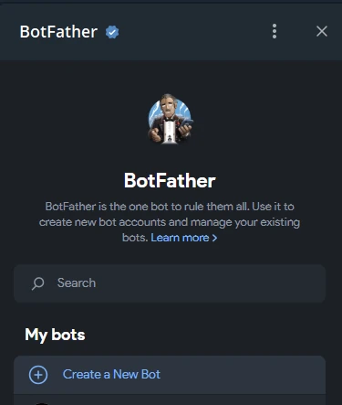
Відкрийте @BotFather, надішліть /newbot (або натисніть «Create a New Bot» у його вікні), придумайте ім’я та скопіюйте токен, який він надішле. Це займає хвилину.
Якщо хочете вести кілька завдань паралельно, увімкніть боту теми в налаштуваннях @BotFather: тоді кожна тема чату стане окремим діалогом з агентом (див. режим «Діалоги»).
Open @BotFather, send /newbot (or tap “Create a New Bot” in its window), choose a name and copy the token it sends you. This takes a minute.
If you want to run several tasks in parallel, turn on topics for the bot in the @BotFather settings: each chat topic then becomes a separate dialog with the agent (see “Dialogs” mode).
Шаг 3. Установите AcpGramКрок 3. Встановіть AcpGramStep 3. Install AcpGram#
Одной командой (рекомендуется). Windows, в PowerShell:
irm https://raw.githubusercontent.com/selesnow/acpgram/main/install.ps1 | iexLinux и macOS, в терминале:
curl -fsSL https://raw.githubusercontent.com/selesnow/acpgram/main/install.sh | bashУстановщик скачивает последний релиз с проверкой контрольной суммы в %LOCALAPPDATA%\acpgram (Windows) или ~/.local/share/acpgram (Linux, macOS), при необходимости ставит приватный Node.js 24 без прав администратора, добавляет команду acpgram в PATH и сразу запускает мастер настройки.
Через npm. Если Node.js 22.13 или новее уже установлен:
npm install -g acpgram
acpgram setupНа Windows PowerShell может ответить, что выполнение сценариев отключено в этой системе, и не запустить
npmилиacpgram. Как это исправить одной командой: Windows: «выполнение сценариев отключено».
Настройки (.env) и база (data/bot.db) при такой установке лежат в ~/.acpgram (или в папке из ACPGRAM_HOME) и не теряются при обновлении пакета.
Однією командою (рекомендовано). Windows, у PowerShell:
irm https://raw.githubusercontent.com/selesnow/acpgram/main/install.ps1 | iexLinux і macOS, у терміналі:
curl -fsSL https://raw.githubusercontent.com/selesnow/acpgram/main/install.sh | bashІнсталятор завантажує останній реліз із перевіркою контрольної суми в %LOCALAPPDATA%\acpgram (Windows) або ~/.local/share/acpgram (Linux, macOS), за потреби встановлює приватний Node.js 24 без прав адміністратора, додає команду acpgram у PATH і одразу запускає майстер налаштування.
Через npm. Якщо Node.js 22.13 або новіший уже встановлено:
npm install -g acpgram
acpgram setupНа Windows PowerShell може відповісти, що виконання сценаріїв вимкнено в цій системі, і не запустити
npmабоacpgram. Як це виправити однією командою: Windows: «виконання сценаріїв вимкнено».
Налаштування (.env) і база (data/bot.db) за такого встановлення лежать у ~/.acpgram (або в папці з ACPGRAM_HOME) і не втрачаються під час оновлення пакета.
With one command (recommended). Windows, in PowerShell:
irm https://raw.githubusercontent.com/selesnow/acpgram/main/install.ps1 | iexLinux and macOS, in the terminal:
curl -fsSL https://raw.githubusercontent.com/selesnow/acpgram/main/install.sh | bashThe installer downloads the latest release, verifying its checksum, into %LOCALAPPDATA%\acpgram (Windows) or ~/.local/share/acpgram (Linux, macOS), sets up a private Node.js 24 without administrator rights if needed, adds the acpgram command to PATH and starts the setup wizard right away.
Through npm. If Node.js 22.13 or later is already installed:
npm install -g acpgram
acpgram setupOn Windows, PowerShell may say that running scripts is disabled on this system and refuse to start
npmoracpgram. The one-command fix: Windows: "running scripts is disabled".
With this kind of installation, the settings (.env) and the database (data/bot.db) live in ~/.acpgram (or in the folder from ACPGRAM_HOME) and are not lost when the package is updated.
Шаг 4. Мастер настройкиКрок 4. Майстер налаштуванняStep 4. Setup wizard#
Мастер запускается сам после установки. Его можно запускать повторно командой acpgram setup: текущие значения подставляются.
- Токен бота. Мастер сразу проверяет его в Telegram и показывает имя бота.
- Администратор. Напишите своему боту любое сообщение — мастер сам определит ваш Telegram ID. Можно ввести ID вручную.
- Корень проектов — необязательно. Если задать, мастер спросит и про личные пространства.
- Песочница — только на Linux и только если установлен
bubblewrap(см. песочницу агента). - Агенты. Мастер находит установленные агенты, записывает их полные пути (чтобы они находились и под службой) и предлагает выбрать агента по умолчанию. Если не установлен ни один, предлагает сразу поставить OpenCode.
- Ключи API — необязательно. Токен, ключи и пароль вводятся скрыто.
- Сохранение. Мастер записывает
.env(доступен только владельцу), создаёт базу и присылает вам тестовое сообщение в Telegram. - Служба. Мастер предлагает зарегистрировать бота как службу, чтобы он запускался вместе с системой.
После этого откройте бота в Telegram и отправьте /start.
Майстер запускається сам після встановлення. Його можна запускати повторно командою acpgram setup: поточні значення підставляються.
- Токен бота. Майстер одразу перевіряє його в Telegram і показує ім’я бота.
- Адміністратор. Напишіть своєму боту будь-яке повідомлення — майстер сам визначить ваш Telegram ID. Можна ввести ID вручну.
- Корінь проєктів — необов’язково. Якщо задати, майстер запитає і про особисті простори.
- Пісочниця — лише на Linux і лише якщо встановлено
bubblewrap(див. пісочницю агента). - Агенти. Майстер знаходить встановлених агентів, записує їхні повні шляхи (щоб вони знаходилися й під службою) і пропонує обрати агента за замовчуванням. Якщо не встановлено жодного, пропонує одразу встановити OpenCode.
- Ключі API — необов’язково. Токен, ключі й пароль вводяться приховано.
- Збереження. Майстер записує
.env(доступний лише власнику), створює базу й надсилає вам тестове повідомлення в Telegram. - Служба. Майстер пропонує зареєструвати бота як службу, щоб він запускався разом із системою.
Після цього відкрийте бота в Telegram і надішліть /start.
The wizard starts by itself after installation. You can run it again with the acpgram setup command: the current values are filled in.
- Bot token. The wizard checks it with Telegram right away and shows the bot’s name.
- Administrator. Send your bot any message — the wizard detects your Telegram ID by itself. You can also enter the ID manually.
- Projects root — optional. If you set it, the wizard also asks about personal workspaces.
- Sandbox — only on Linux and only if
bubblewrapis installed (see agent sandbox). - Agents. The wizard finds the installed agents, writes down their full paths (so that they are also found under the service) and offers to choose the default agent. If none is installed, it offers to install OpenCode right away.
- API keys — optional. The token, keys and password are entered hidden.
- Saving. The wizard writes
.env(readable only by the owner), creates the database and sends you a test message in Telegram. - Service. The wizard offers to register the bot as a service so that it starts together with the system.
After that, open the bot in Telegram and send /start.
Служба и автозапускСлужба й автозапускService and autostart#
Служба запускает бота вместе с системой и перезапускает при сбое. Обычно её ставит мастер, но ею можно управлять и вручную:
acpgram service install
acpgram service status
acpgram service restart
acpgram service stop
acpgram service uninstall| ОС | Как работает служба |
|---|---|
| Windows | служба через NSSM (winget install --id NSSM.NSSM -e), терминал от имени администратора |
| Linux | systemd --user; чтобы бот работал без входа в систему, выполните sudo loginctl enable-linger $USER |
| macOS | LaunchAgent (launchd) |
На Windows службе нужен пароль вашей учётной записи: под ней авторизованы агенты. Если вы входите через учётную запись Microsoft, это пароль от неё, а не PIN-код Windows. Учётная запись без пароля службу запустить не может. Пароль не выводится на экран и ботом не сохраняется.
acpgram service stop останавливает службу, не удаляя её: после перезагрузки она запустится снова. Журнал службы — data/service.log в папке данных бота (на Linux ещё и journalctl --user -u acpgram -f).
Служба запускає бота разом із системою і перезапускає в разі збою. Зазвичай її встановлює майстер, але нею можна керувати й вручну:
acpgram service install
acpgram service status
acpgram service restart
acpgram service stop
acpgram service uninstall| ОС | Як працює служба |
|---|---|
| Windows | служба через NSSM (winget install --id NSSM.NSSM -e), термінал від імені адміністратора |
| Linux | systemd --user; щоб бот працював без входу в систему, виконайте sudo loginctl enable-linger $USER |
| macOS | LaunchAgent (launchd) |
На Windows службі потрібен пароль вашого облікового запису: під ним авторизовано агентів. Якщо ви входите через обліковий запис Microsoft, це пароль від нього, а не PIN-код Windows. Обліковий запис без пароля запустити службу не може. Пароль не виводиться на екран і ботом не зберігається.
acpgram service stop зупиняє службу, не видаляючи її: після перезавантаження вона запуститься знову. Журнал служби — data/service.log у папці даних бота (на Linux ще й journalctl --user -u acpgram -f).
The service starts the bot together with the system and restarts it after a failure. The wizard usually installs it, but you can also manage it manually:
acpgram service install
acpgram service status
acpgram service restart
acpgram service stop
acpgram service uninstall| OS | How the service works |
|---|---|
| Windows | a service through NSSM (winget install --id NSSM.NSSM -e), terminal run as administrator |
| Linux | systemd --user; for the bot to work without anyone logged in, run sudo loginctl enable-linger $USER |
| macOS | LaunchAgent (launchd) |
On Windows, the service needs the password of your account: the agents are signed in under it. If you sign in with a Microsoft account, this is that account’s password, not the Windows PIN. An account without a password cannot run the service. The password is not shown on screen and the bot does not store it.
acpgram service stop stops the service without removing it: after a reboot it starts again. The service log is data/service.log in the bot’s data folder (on Linux also journalctl --user -u acpgram -f).
ОбновлениеОновленняUpdating#
Если ставили установщиком:
acpgram update
acpgram service restartЕсли через npm:
npm install -g acpgram@latest
acpgram service restartНастройки и история сессий сохраняются.
Якщо встановлювали інсталятором:
acpgram update
acpgram service restartЯкщо через npm:
npm install -g acpgram@latest
acpgram service restartНалаштування та історія сесій зберігаються.
If you installed with the installer:
acpgram update
acpgram service restartIf through npm:
npm install -g acpgram@latest
acpgram service restartSettings and session history are kept.
DockerDockerDocker#
В образе уже есть все пять агентов и мосты: на хост ничего ставить не нужно, мастер тоже не нужен. Понадобятся Git и Docker с Docker Compose.
git clone https://github.com/selesnow/acpgram.git
cd acpgram
cp .env.example .envЗаполните в .env токен бота, свой Telegram ID, ключ агента и папку с проектами. Например, для Gemini CLI:
TELEGRAM_BOT_TOKEN=YOUR_BOT_TOKEN
ALLOWED_USER_ID=YOUR_TELEGRAM_ID
DEFAULT_ENGINE=gemini
GEMINI_API_KEY=YOUR_API_KEY
PROJECTS_DIR=./projectsdocker compose up -d --build
docker compose logs -fPROJECTS_DIR— папка проектов на хосте. В контейнере она становится/projects: это и есть корень для/project. Агент видит только её.- Авторизация по ключам из
.env: Gemini —GEMINI_API_KEY, Claude Code —ANTHROPIC_API_KEY, Codex —OPENAI_API_KEY. OpenCode работает и без ключа, на бесплатных моделях. - Antigravity CLI: после запуска один раз выполните
docker compose exec -it bot agy acp --loginлибо работайте по ключу Gemini API. - Чтобы собрать образ полегче, перечислите нужных агентов в
ENGINES(ENGINES=gemini claude);DEFAULT_ENGINEдолжен быть из собранных. - Бот в контейнере работает от пользователя
node(uid 1000). Чтобы агент мог менять файлы, папка проектов должна быть доступна этому uid на запись:sudo chown -R 1000:1000 <папка>. - Настройки, входы и история агентов хранятся в томах и переживают обновление контейнера.
docker compose down -vих удаляет. - Нужны R, Python или другие инструменты — сделайте свой
Dockerfileповерх образа.
Docker или установка напрямую? Напрямую агент получает всё, что установлено на машине, и работает с правами учётной записи бота. В Docker он изолирован от системы и видит только папку проектов, но и инструменты у него только те, что есть в образе. Песочница агента в Docker не поддерживается.
В образі вже є всі п’ять агентів і мости: на хост нічого встановлювати не потрібно, майстер теж не потрібен. Знадобляться Git і Docker з Docker Compose.
git clone https://github.com/selesnow/acpgram.git
cd acpgram
cp .env.example .envЗаповніть у .env токен бота, свій Telegram ID, ключ агента й папку з проєктами. Наприклад, для Gemini CLI:
TELEGRAM_BOT_TOKEN=YOUR_BOT_TOKEN
ALLOWED_USER_ID=YOUR_TELEGRAM_ID
DEFAULT_ENGINE=gemini
GEMINI_API_KEY=YOUR_API_KEY
PROJECTS_DIR=./projectsdocker compose up -d --build
docker compose logs -fPROJECTS_DIR— папка проєктів на хості. У контейнері вона стає/projects: це і є корінь для/project. Агент бачить лише її.- Авторизація за ключами з
.env: Gemini —GEMINI_API_KEY, Claude Code —ANTHROPIC_API_KEY, Codex —OPENAI_API_KEY. OpenCode працює і без ключа, на безкоштовних моделях. - Antigravity CLI: після запуску один раз виконайте
docker compose exec -it bot agy acp --loginабо працюйте за ключем Gemini API. - Щоб зібрати легший образ, перелічіть потрібних агентів у
ENGINES(ENGINES=gemini claude);DEFAULT_ENGINEмає бути з-поміж зібраних. - Бот у контейнері працює від користувача
node(uid 1000). Щоб агент міг змінювати файли, папка проєктів має бути доступна цьому uid на запис:sudo chown -R 1000:1000 <папка>. - Налаштування, входи та історія агентів зберігаються в томах і переживають оновлення контейнера.
docker compose down -vїх видаляє. - Потрібні R, Python або інші інструменти — зробіть свій
Dockerfileповерх образу.
Docker чи встановлення напряму? Напряму агент отримує все, що встановлено на машині, і працює з правами облікового запису бота. У Docker він ізольований від системи й бачить лише папку проєктів, але й інструменти в нього лише ті, що є в образі. Пісочниця агента у Docker не підтримується.
The image already contains all five agents and the bridges: you do not need to install anything on the host, and the wizard is not needed either. You need Git and Docker with Docker Compose.
git clone https://github.com/selesnow/acpgram.git
cd acpgram
cp .env.example .envIn .env, fill in the bot token, your Telegram ID, the agent key and the projects folder. For example, for Gemini CLI:
TELEGRAM_BOT_TOKEN=YOUR_BOT_TOKEN
ALLOWED_USER_ID=YOUR_TELEGRAM_ID
DEFAULT_ENGINE=gemini
GEMINI_API_KEY=YOUR_API_KEY
PROJECTS_DIR=./projectsdocker compose up -d --build
docker compose logs -fPROJECTS_DIRis the projects folder on the host. In the container it becomes/projects: this is the root for/project. The agent sees only this folder.- Authorization uses the keys from
.env: Gemini —GEMINI_API_KEY, Claude Code —ANTHROPIC_API_KEY, Codex —OPENAI_API_KEY. OpenCode also works without a key, on free models. - Antigravity CLI: after startup, run
docker compose exec -it bot agy acp --loginonce, or work with a Gemini API key. - To build a lighter image, list the agents you need in
ENGINES(ENGINES=gemini claude);DEFAULT_ENGINEmust be one of those built. - The bot in the container runs as the
nodeuser (uid 1000). For the agent to be able to change files, the projects folder must be writable by this uid:sudo chown -R 1000:1000 <folder>. - Settings, sign-ins and agent history are stored in volumes and survive a container update.
docker compose down -vdeletes them. - If you need R, Python or other tools, make your own
Dockerfileon top of the image.
Docker or a direct installation? Installed directly, the agent gets everything installed on the machine and works with the rights of the bot’s account. In Docker it is isolated from the system and sees only the projects folder, but its tools are also limited to those in the image. The agent sandbox is not supported in Docker.
Запуск из исходниковЗапуск із вихідного кодуRunning from source#
Нужны Git и Node.js 24 или новее.
git clone https://github.com/selesnow/acpgram.git
cd acpgram
npm run setupЕсли отказались от службы, бот запускается командой npm start. Первый запуск без .env сам откроет мастер настройки. Можно обойтись и без мастера: скопируйте .env.example в .env, заполните и запустите npm start.
Потрібні Git і Node.js 24 або новіший.
git clone https://github.com/selesnow/acpgram.git
cd acpgram
npm run setupЯкщо відмовилися від служби, бот запускається командою npm start. Перший запуск без .env сам відкриє майстер налаштування. Можна обійтися й без майстра: скопіюйте .env.example у .env, заповніть і запустіть npm start.
You need Git and Node.js 24 or later.
git clone https://github.com/selesnow/acpgram.git
cd acpgram
npm run setupIf you declined the service, start the bot with the npm start command. The first run without .env opens the setup wizard by itself. You can also do without the wizard: copy .env.example to .env, fill it in and run npm start.
Переход с установщика на npmПерехід з інсталятора на npmMoving from the installer to npm#
Установщик на Windows добавляет в PATH папку %LOCALAPPDATA%\acpgram\bin. Если после этого поставить AcpGram через npm, Windows может продолжать вызывать старую версию.
- Остановите и удалите прежнюю службу:
acpgram service uninstall. Иначе токен будет занят, и Telegram вернёт ошибкуConflict. - Проверьте, какая команда вызывается:
Get-Command acpgram. - Уберите старую папку из пользовательского
PATH:
[Environment]::SetEnvironmentVariable("Path", (([Environment]::GetEnvironmentVariable("Path", "User") -split ';') | Where-Object { $_ -notlike '*\acpgram\bin' }) -join ';', "User")- Откройте новое окно терминала и запустите
acpgram setup: мастер найдёт прежнюю установку и предложит перенести.envи базу.
Інсталятор на Windows додає в PATH папку %LOCALAPPDATA%\acpgram\bin. Якщо після цього встановити AcpGram через npm, Windows може й далі викликати стару версію.
- Зупиніть і видаліть попередню службу:
acpgram service uninstall. Інакше токен буде зайнятий, і Telegram поверне помилкуConflict. - Перевірте, яка команда викликається:
Get-Command acpgram. - Приберіть стару папку з користувацького
PATH:
[Environment]::SetEnvironmentVariable("Path", (([Environment]::GetEnvironmentVariable("Path", "User") -split ';') | Where-Object { $_ -notlike '*\acpgram\bin' }) -join ';', "User")- Відкрийте нове вікно термінала й запустіть
acpgram setup: майстер знайде попереднє встановлення і запропонує перенести.envі базу.
On Windows, the installer adds the %LOCALAPPDATA%\acpgram\bin folder to PATH. If you then install AcpGram through npm, Windows may keep calling the old version.
- Stop and remove the previous service:
acpgram service uninstall. Otherwise the token stays in use, and Telegram returns aConflicterror. - Check which command is called:
Get-Command acpgram. - Remove the old folder from the user
PATH:
[Environment]::SetEnvironmentVariable("Path", (([Environment]::GetEnvironmentVariable("Path", "User") -split ';') | Where-Object { $_ -notlike '*\acpgram\bin' }) -join ';', "User")- Open a new terminal window and run
acpgram setup: the wizard finds the previous installation and offers to move.envand the database.
Первые шаги в ботеПерші кроки в ботіFirst steps in the bot#
Экран /startЕкран /startThe /start screen#
Команда /start показывает, с чем вы сейчас работаете: агент, модель, уровень доступа и проект. Под сообщением — кнопки основных действий, ниже — список команд.

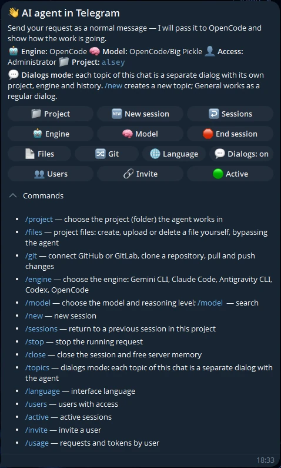
Кнопки повторяют команды: проект, новая сессия, прошлые сессии, агент, модель, завершение сессии, файлы, Git, язык, режим диалогов. У администратора есть ещё сотрудники, приглашение и активные сессии.
Команда /start показує, з чим ви зараз працюєте: агент, модель, рівень доступу і проєкт. Під повідомленням — кнопки основних дій, нижче — список команд.
Кнопки повторюють команди: проєкт, нова сесія, попередні сесії, агент, модель, завершення сесії, файли, Git, мова, режим діалогів. В адміністратора є ще співробітники, запрошення й активні сесії.
The /start command shows what you are currently working with: the agent, model, access level and project. Under the message are buttons for the main actions, and below them the list of commands.
The buttons repeat the commands: project, new session, past sessions, agent, model, ending the session, files, Git, language, dialogs mode. The administrator also has teammates, invitation and active sessions.
Как поставить задачуЯк поставити завданняHow to give a task#
- Выберите проект:
/project(см. Проекты). - Напишите задачу обычным сообщением, как коллеге: «найди, почему падает тест авторизации, и исправь».
- Следите за ходом работы и отвечайте на запросы разрешений кнопками.
- Получите ответ и, если нужно, файлы.
К сообщению можно приложить скриншот, документ или архив: подпись становится запросом (см. Файлы).
- Оберіть проєкт:
/project(див. Проєкти). - Напишіть завдання звичайним повідомленням, як колезі: «знайди, чому падає тест авторизації, і виправ».
- Стежте за ходом роботи й відповідайте на запити дозволів кнопками.
- Отримайте відповідь і, якщо потрібно, файли.
До повідомлення можна додати знімок екрана, документ або архів: підпис стає запитом (див. Файли).
- Choose a project:
/project(see Projects). - Write the task as a regular message, as you would to a colleague: “find out why the authorization test fails and fix it”.
- Follow the progress and answer permission requests with the buttons.
- Get the answer and, if needed, files.
You can attach a screenshot, document or archive to a message: the caption becomes the request (see Files).
Ход работы и ответХід роботи й відповідьProgress and the answer#
Пока агент работает, бот показывает черновик сообщения:
- пока агент запускается — анимированные точки Telegram;
- затем заголовок размышлений и ход работы: последние пять шагов, счётчик остальных и время выполнения;
- если агент прислал боту свой план — блок «План: 3/7» с пунктами (см. План работы);
- как только пошёл ответ — последний шаг и сам текст ответа.

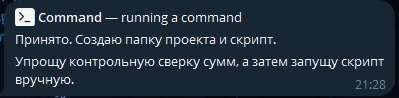

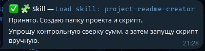
Итоговый ответ приходит с форматированием: заголовки, списки, таблицы, блоки кода. В конце — свёрнутый блок «Ход работы» со всеми шагами и подвал: агент, реальная модель, уровень рассуждений, токены, стоимость (у Claude Code и OpenCode), проект и время ответа.

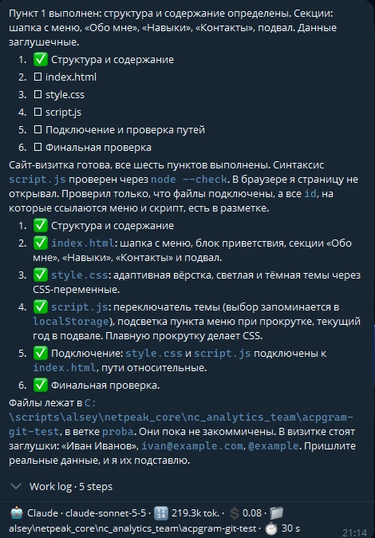
Поки агент працює, бот показує чернетку повідомлення:
- поки агент запускається — анімовані крапки Telegram;
- потім заголовок міркувань і хід роботи: останні п’ять кроків, лічильник решти та час виконання;
- якщо агент надіслав боту свій план — блок «План: 3/7» із пунктами (див. План роботи);
- щойно пішла відповідь — останній крок і сам текст відповіді.
Підсумкова відповідь надходить із форматуванням: заголовки, списки, таблиці, блоки коду. Наприкінці — згорнутий блок «Хід роботи» з усіма кроками та підвал: агент, реальна модель, рівень міркувань, токени, вартість (у Claude Code і OpenCode), проєкт і час відповіді.
While the agent is working, the bot shows a draft message:
- while the agent is starting — Telegram’s animated dots;
- then the reasoning header and the progress: the last five steps, a counter of the rest and the running time;
- if the agent sent the bot its plan — a “Plan: 3/7” block with the items (see Work plan);
- as soon as the answer starts coming — the last step and the answer text itself.
The final answer arrives formatted: headings, lists, tables, code blocks. At the end there is a collapsed “Work log” block with all the steps and a footer: the agent, the actual model, the reasoning level, tokens, cost (for Claude Code and OpenCode), the project and the response time.
План работыПлан роботиWork plan#
Некоторые агенты ведут список дел и присылают его боту. Тогда в черновике появляется блок «План: 3/7» с пунктами и отметками: ✅ сделано, ▶️ выполняется, ▫️ впереди. Блок виден, только пока агент работает: когда приходит ответ, он исчезает вместе с черновиком.
Так бывает не всегда, и зависит это от агента, а не от бота:
- OpenCode план боту не присылает. Список дел он ведёт, но в ходе работы это выглядит как обычный шаг «План работы».
- Claude Code и Codex присылать план умеют, но пользуются этим не в каждой задаче: часто агент просто пишет список текстом в ответе.
- Gemini CLI и Antigravity CLI: показ плана не подтверждён.
Если блока «План» нет, план всё равно можно получить: попросите агента сначала составить список дел и отмечать пункты по ходу работы. Он напишет его текстом, как на снимке ниже.

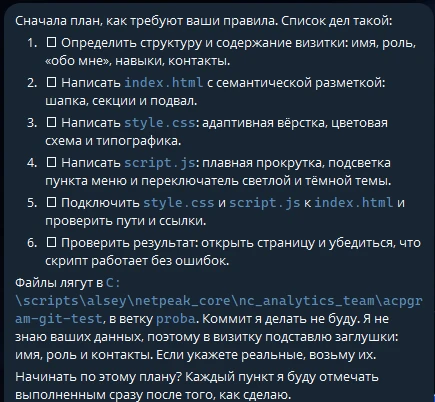
Режим планирования Claude Code. У Claude Code есть собственный режим планирования: агент сначала составляет план, сохраняет его в файл и просит одобрить. Бот показывает этот запрос с вариантами самого Claude Code (они приходят на английском): одобрить и подтверждать правки вручную, одобрить и работать без подтверждений, одобрить и перейти в автоматический режим либо отклонить. Варианты, которые дали бы агенту больше свободы, чем разрешает ваш уровень доступа, бот не показывает.

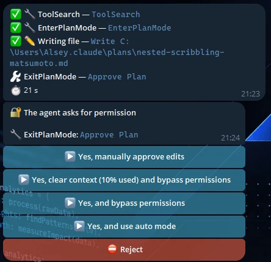
В самом запросе текста плана нет. Если хотите прочитать план до одобрения, попросите агента сначала прислать его в чат.
Деякі агенти ведуть список справ і надсилають його боту. Тоді в чернетці з’являється блок «План: 3/7» із пунктами й позначками: ✅ зроблено, ▶️ виконується, ▫️ попереду. Блок видно, лише поки агент працює: коли надходить відповідь, він зникає разом із чернеткою.
Так буває не завжди, і залежить це від агента, а не від бота:
- OpenCode план боту не надсилає. Список справ він веде, але в ході роботи це має вигляд звичайного кроку «План роботи».
- Claude Code і Codex надсилати план уміють, але користуються цим не в кожному завданні: часто агент просто пише список текстом у відповіді.
- Gemini CLI та Antigravity CLI: показ плану не підтверджено.
Якщо блока «План» немає, план усе одно можна отримати: попросіть агента спочатку скласти список справ і позначати пункти в ході роботи. Він напише його текстом, як на знімку нижче.
Режим планування Claude Code. У Claude Code є власний режим планування: агент спочатку складає план, зберігає його у файл і просить схвалити. Бот показує цей запит із варіантами самого Claude Code (вони надходять англійською): схвалити й підтверджувати правки вручну, схвалити й працювати без підтверджень, схвалити й перейти в автоматичний режим або відхилити. Варіанти, які дали б агенту більше свободи, ніж дозволяє ваш рівень доступу, бот не показує.
У самому запиті тексту плану немає. Якщо хочете прочитати план до схвалення, попросіть агента спочатку надіслати його в чат.
Some agents keep a to-do list and send it to the bot. The draft then shows a “Plan: 3/7” block with the items and marks: ✅ done, ▶️ in progress, ▫️ ahead. The block is visible only while the agent works: when the answer arrives, it disappears together with the draft.
This does not always happen, and it depends on the agent, not on the bot:
- OpenCode does not send its plan to the bot. It does keep a to-do list, but in the progress it looks like an ordinary “Work plan” step.
- Claude Code and Codex can send a plan, but do not do so in every task: often the agent simply writes the list as text in its answer.
- Gemini CLI and Antigravity CLI: showing the plan is not confirmed.
If there is no “Plan” block, you can still get a plan: ask the agent to make a to-do list first and mark the items as it goes. It will write the list as text, as in the screenshot below.
Claude Code’s planning mode. Claude Code has a planning mode of its own: the agent first writes a plan, saves it to a file and asks you to approve it. The bot shows this request with Claude Code’s own options: approve and confirm edits manually, approve and work without confirmations, approve and switch to auto mode, or reject. Options that would give the agent more freedom than your access level allows are not shown.
The request itself does not contain the text of the plan. If you want to read the plan before approving it, ask the agent to send it to the chat first.
Запросы разрешенийЗапити дозволівPermission requests#
Когда агенту нужно разрешение на команду или правку файла, бот присылает запрос с кнопками:
- «Разрешить» — только это действие;
- «Разрешить на эту сессию» — это и такие же действия до конца сессии;
- «Отклонить».
Команда показывается блоком кода, а в запросе на правку файла виден дифф: что именно агент изменит, а не только путь.

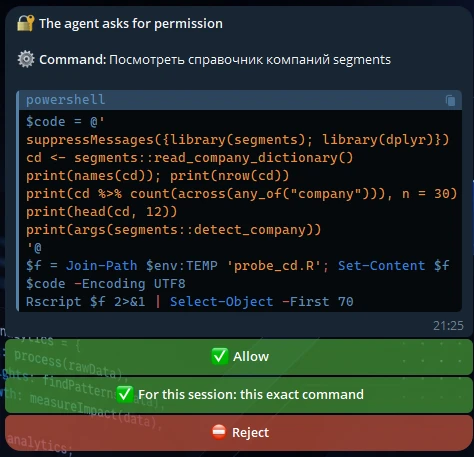

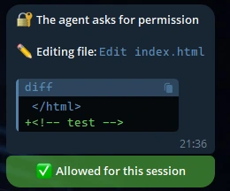
Как работает «на эту сессию»:
- на кнопке написано, что именно будет разрешено;
- правки файлов разрешаются целиком;
- команды — по имени программы: разрешили
ls— без вопросов пойдут всеls …; - у программ с подкомандами (
git,npm,dockerи подобных) — по программе и подкоманде: разрешилиgit status— пойдут всеgit status …, но неgit push; - оболочки (
bash -c,powershell,cmd /c,sudo), интерпретаторы (python,node,Rscript,npx), команды с подстановками, записью в файл и переменными перед программой разрешаются только точно такие же; - в составной команде должны быть разрешены все части.
Правило живёт, пока работает процесс агента: до /new, /close, закрытия по простою или перезапуска бота. Варианта «разрешить навсегда» в чате нет.
Будут ли вообще приходить запросы, зависит от уровня доступа.
Коли агенту потрібен дозвіл на команду або редагування файлу, бот надсилає запит із кнопками:
- «Дозволити» — лише цю дію;
- «Дозволити на цю сесію» — цю й такі самі дії до кінця сесії;
- «Відхилити».
Команда показується блоком коду, а в запиті на редагування файлу видно диф: що саме агент змінить, а не лише шлях.
Як працює «на цю сесію»:
- на кнопці написано, що саме буде дозволено;
- редагування файлів дозволяється повністю;
- команди — за назвою програми: дозволили
ls— без запитань підуть усіls …; - у програм із підкомандами (
git,npm,dockerтощо) — за програмою і підкомандою: дозволилиgit status— підуть усіgit status …, але неgit push; - оболонки (
bash -c,powershell,cmd /c,sudo), інтерпретатори (python,node,Rscript,npx), команди з підстановками, записом у файл і змінними перед програмою дозволяються лише точно такі самі; - у складеній команді мають бути дозволені всі частини.
Правило діє, поки працює процес агента: до /new, /close, закриття через простій або перезапуску бота. Варіанта «дозволити назавжди» в чаті немає.
Чи надходитимуть запити взагалі, залежить від рівня доступу.
When the agent needs permission for a command or a file edit, the bot sends a request with buttons:
- “Allow” — this action only;
- “Allow for this session” — this action and the same kind of actions until the end of the session;
- “Reject”.
A command is shown as a code block, and a file edit request shows the diff: exactly what the agent will change, not just the path.
How “for this session” works:
- the button says exactly what will be allowed;
- file edits are allowed as a whole;
- commands — by program name: once you allow
ls, allls …commands run without asking; - for programs with subcommands (
git,npm,dockerand the like) — by program and subcommand: once you allowgit status, allgit status …commands run, but notgit push; - shells (
bash -c,powershell,cmd /c,sudo), interpreters (python,node,Rscript,npx), and commands with substitutions, output to a file or variables before the program are allowed only when they are exactly the same; - in a compound command, every part must be allowed.
The rule lives as long as the agent process runs: until /new, /close, closing on idle or a bot restart. There is no “allow forever” option in the chat.
Whether requests come at all depends on the access level.
Кнопки быстрого ответаКнопки швидкої відповідіQuick reply buttons#
Когда агент предлагает выбор («Какой вариант применить?»), варианты приходят кнопками прямо в его ответе. Нажатие отправляет текст варианта агенту как ваше сообщение.

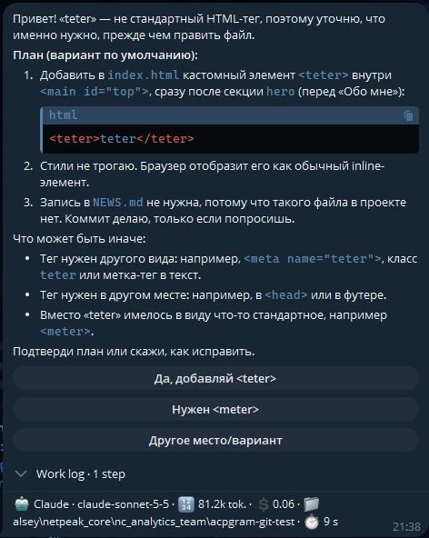
Коли агент пропонує вибір («Який варіант застосувати?»), варіанти надходять кнопками прямо в його відповіді. Натискання надсилає текст варіанта агенту як ваше повідомлення.
Сообщение во время работыПовідомлення під час роботиA message while the agent is working#
Сообщение, отправленное, пока агент выполняет запрос, не теряется. Бот ставит его в очередь и отправит агенту, как только тот закончит. Под уведомлением две кнопки: «Остановить и отправить это» и «Не отправлять». В очереди одно сообщение: новое заменяет прежнее.
Повідомлення, надіслане, поки агент виконує запит, не губиться. Бот ставить його в чергу й надішле агенту, щойно той закінчить. Під сповіщенням дві кнопки: «Зупинити й надіслати це» і «Не надсилати». У черзі одне повідомлення: нове замінює попереднє.
A message sent while the agent is handling a request is not lost. The bot puts it in a queue and sends it to the agent as soon as the agent finishes. Under the notification there are two buttons: “Stop and send this now” and “Do not send”. The queue holds one message: a new one replaces the previous one.
Ответ с цитатойВідповідь із цитатоюReply with a quote#
Ответьте на сообщение агента, выделив в нём фрагмент: агент получит и ваш текст, и этот фрагмент. Удобно для просьб вроде «перепиши вот это».
Дайте відповідь на повідомлення агента, виділивши в ньому фрагмент: агент отримає і ваш текст, і цей фрагмент. Зручно для прохань на кшталт «перепиши ось це».
Reply to a message from the agent with a fragment of it selected: the agent gets both your text and that fragment. This is handy for requests like “rewrite this part”.
Остановка запросаЗупинка запитуStopping a request#
Команда /stop или кнопка остановки под черновиком прерывает выполняющийся запрос. Сессия при этом остаётся: можно сразу написать следующее сообщение.
Опечатка в команде (/modle) агенту не уходит: бот спросит, не имели ли вы в виду /model. На голосовое, видео и стикер бот отвечает подсказкой.
Команда /stop або кнопка зупинки під чернеткою перериває запит, що виконується. Сесія при цьому залишається: можна одразу написати наступне повідомлення.
Одруківка в команді (/modle) агенту не йде: бот запитає, чи не мали ви на увазі /model. На голосове, відео й стікер бот відповідає підказкою.
The /stop command or the stop button under the draft interrupts the running request. The session stays: you can write the next message right away.
A typo in a command (/modle) is not sent to the agent: the bot asks whether you meant /model. The bot answers a voice message, video or sticker with a hint.
ПроектыПроєктиProjects#
Проект — это папка, в которой работает агент. Выбор запоминается для каждого пользователя.
Проєкт — це папка, у якій працює агент. Вибір запам’ятовується для кожного користувача.
A project is the folder the agent works in. The choice is remembered for each user.
Выбор проектаВибір проєктуChoosing a project#
Команда /project показывает папки кнопками. Вверху — последние проекты, по папкам можно ходить, а нужную выбрать кнопкой «Выбрать эту папку».

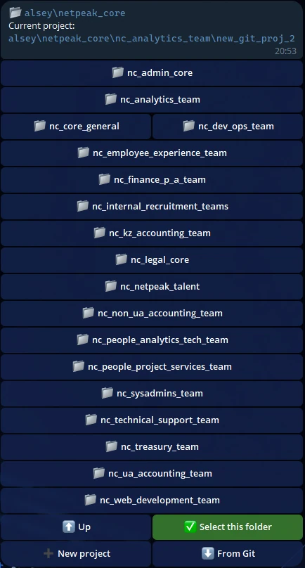
Быстрее — указать название или путь:
/project landing
/project C:\my-app
/project ~/projects/webЧто доступно для выбора, зависит от настроек:
- без
PROJECTS_ROOT(личная установка) — любая существующая папка, по умолчанию домашняя; - с
PROJECTS_ROOT— только папки внутри корня; - с
PROJECTS_ROOTиUSER_WORKSPACES=1— у каждого сотрудника своя папка внутри корня (см. личные пространства).
Команда /project показує папки кнопками. Угорі — останні проєкти, папками можна переходити, а потрібну обрати кнопкою «Обрати цю папку».
Швидше — вказати назву або шлях:
/project landing
/project C:\my-app
/project ~/projects/webЩо доступно для вибору, залежить від налаштувань:
- без
PROJECTS_ROOT(особисте встановлення) — будь-яка наявна папка, за замовчуванням домашня; - з
PROJECTS_ROOT— лише папки всередині кореня; - з
PROJECTS_ROOTіUSER_WORKSPACES=1— у кожного співробітника своя папка всередині кореня (див. особисті простори).
The /project command shows folders as buttons. Recent projects are at the top, you can browse through folders, and you select the one you need with the “Select this folder” button.
A faster way is to give a name or a path:
/project landing
/project C:\my-app
/project ~/projects/webWhat you can choose depends on the settings:
- without
PROJECTS_ROOT(a personal installation) — any existing folder, the home folder by default; - with
PROJECTS_ROOT— only folders inside the root; - with
PROJECTS_ROOTandUSER_WORKSPACES=1— each teammate has a folder of their own inside the root (see personal workspaces).
Новый проектНовий проєктNew project#
Кнопка «➕ Новый проект» в /project спрашивает название, создаёт папку в открытом месте и сразу делает её рабочей. Неподходящее название (путь, служебное имя, точка в начале) бот попросит заменить. «Отмена» или любая команда отменяют ожидание.
Администратору кнопка доступна везде, сотруднику — в его личном пространстве.
Кнопка «➕ Новий проєкт» у /project запитує назву, створює папку у відкритому місці й одразу робить її робочою. Невідповідну назву (шлях, службове ім’я, крапка на початку) бот попросить замінити. «Скасувати» або будь-яка команда скасовують очікування.
Адміністратору кнопка доступна всюди, співробітнику — в його особистому просторі.
The “➕ New project” button in /project asks for a name, creates a folder in the currently open place and makes it the working folder right away. If the name is not suitable (a path, a reserved name, a leading dot), the bot asks you to change it. “Cancel” or any command cancels the wait.
The administrator has the button everywhere; a teammate has it in their personal workspace.
Проект из репозиторияПроєкт із репозиторіюA project from a repository#
Кнопка «⬇️ Из Git» в /project показывает ваши репозитории на подключённых сервисах списком с поиском. Выбранный репозиторий клонируется и сразу становится проектом. Сначала нужно подключить аккаунт в /git (см. Git).
Кнопка «⬇️ З Git» у /project показує ваші репозиторії на підключених сервісах списком із пошуком. Обраний репозиторій клонується й одразу стає проєктом. Спочатку потрібно підключити акаунт у /git (див. Git).
The “⬇️ From Git” button in /project shows your repositories on the connected services as a list with search. The selected repository is cloned and becomes the project right away. You need to connect an account in /git first (see Git).
Сессии и диалогиСесії та діалогиSessions and dialogs#
Сессия — это один разговор с агентом: он помнит всё, о чём шла речь.
Сесія — це одна розмова з агентом: він пам’ятає все, про що йшлося.
A session is one conversation with the agent: it remembers everything that was discussed.
Новая сессия и возврат к прошлойНова сесія і повернення до попередньоїA new session and returning to a past one#
/newначинает новую сессию: агент забывает предыдущий разговор./sessionsпоказывает прошлые сессии текущего проекта: дата, агент, число запросов и начало первого запроса. Нажатие возобновляет сессию с того же места, даже после перезапуска бота.
Сессия возобновляется в том агенте, в котором была создана. Смена агента командой /engine начинает новую сессию.

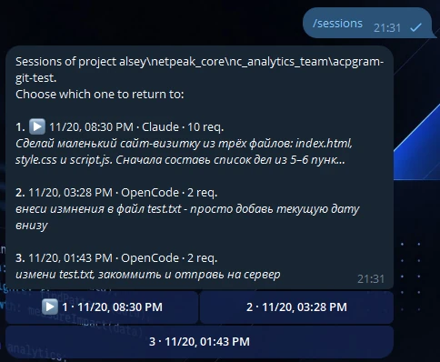
/newпочинає нову сесію: агент забуває попередню розмову./sessionsпоказує попередні сесії поточного проєкту: дата, агент, кількість запитів і початок першого запиту. Натискання відновлює сесію з того самого місця, навіть після перезапуску бота.
Сесія відновлюється в тому агенті, у якому була створена. Зміна агента командою /engine починає нову сесію.
/newstarts a new session: the agent forgets the previous conversation./sessionsshows the past sessions of the current project: the date, the agent, the number of requests and the beginning of the first request. Pressing one resumes the session from the same place, even after a bot restart.
A session is resumed in the agent it was created in. Changing the agent with the /engine command starts a new session.
Режим «Диалоги»: темы TelegramРежим «Діалоги»: теми Telegram“Dialogs” mode: Telegram topics#
Если боту включены темы в личном чате (в настройках @BotFather), каждая тема чата становится отдельным диалогом с агентом: со своим проектом, агентом и историей.
- Можно работать в нескольких темах одновременно.
- Вернувшись в тему позже, вы продолжаете с того же места: сессия возобновляется сама.
/newсоздаёт новую тему. Название ей даёт агент по первому ответу, с коротким именем проекта в начале.- Тема закреплена за своим проектом.
- General работает как обычный диалог, а
/projectв нём показывает диалоги выбранного проекта кнопками.

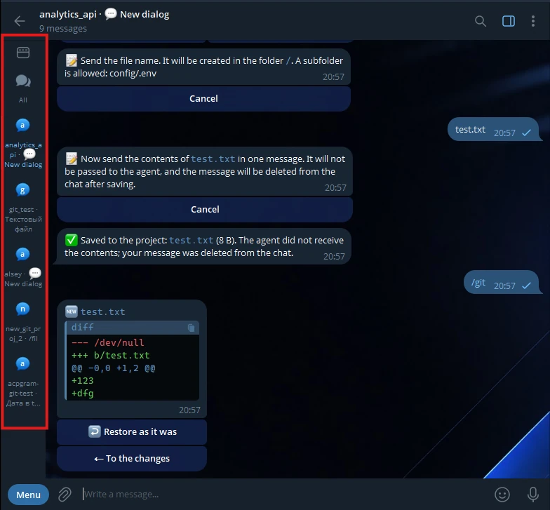
Режим каждый выбирает сам командой /topics: «Диалоги» или «Один чат».
Одновременно у сотрудника работает до двух агентов, у администратора — до четырёх (настройки MAX_AGENTS_PER_USER и ADMIN_MAX_AGENTS). Если места нет, выгружается самый давний простаивающий агент этого же пользователя; его диалог продолжится, когда вы в него вернётесь.
Якщо боту ввімкнено теми в особистому чаті (у налаштуваннях @BotFather), кожна тема чату стає окремим діалогом з агентом: зі своїм проєктом, агентом та історією.
- Можна працювати в кількох темах одночасно.
- Повернувшись у тему пізніше, ви продовжуєте з того самого місця: сесія відновлюється сама.
/newстворює нову тему. Назву їй дає агент за першою відповіддю, з короткою назвою проєкту на початку.- Тема закріплена за своїм проєктом.
- General працює як звичайний діалог, а
/projectу ньому показує діалоги обраного проєкту кнопками.
Режим кожен обирає сам командою /topics: «Діалоги» або «Один чат».
Одночасно у співробітника працює до двох агентів, в адміністратора — до чотирьох (налаштування MAX_AGENTS_PER_USER і ADMIN_MAX_AGENTS). Якщо місця немає, вивантажується агент цього ж користувача, який простоює найдовше; його діалог продовжиться, коли ви до нього повернетеся.
If topics are turned on for the bot in the private chat (in the @BotFather settings), each chat topic becomes a separate dialog with the agent, with its own project, agent and history.
- You can work in several topics at the same time.
- When you come back to a topic later, you continue from the same place: the session is resumed by itself.
/newcreates a new topic. The agent names it after the first answer, with a short project name at the beginning.- A topic is bound to its project.
- General works as a regular dialog, and
/projectin it shows the dialogs of the selected project as buttons.
Each user chooses the mode with the /topics command: “Dialogs” or “One chat”.
A teammate can have up to two agents running at the same time, the administrator up to four (the MAX_AGENTS_PER_USER and ADMIN_MAX_AGENTS settings). If there is no room, the longest-idle agent of the same user is unloaded; its dialog continues when you return to it.
Закрытие сессииЗакриття сесіїClosing a session#
/close (или /exit) закрывает сессию и выгружает процесс агента. Простаивающая сессия закрывается сама через 30 минут (IDLE_MINUTES). Закрытую сессию можно возобновить через /sessions.
/close (або /exit) закриває сесію і вивантажує процес агента. Сесія, що простоює, закривається сама через 30 хвилин (IDLE_MINUTES). Закриту сесію можна відновити через /sessions.
/close (or /exit) closes the session and unloads the agent process. An idle session closes by itself after 30 minutes (IDLE_MINUTES). You can resume a closed session through /sessions.
Агенты и моделиАгенти й моделіAgents and models#
Выбор агентаВибір агентаChoosing an agent#
В интерфейсе бота агент называется «движок»: кнопка «🤖 Движок» и команда /engine.
Команда /engine показывает агентов, доступных вам на этой машине. Выбор запоминается для каждого пользователя, смена агента начинает новую сессию.
/engine claude
/engine opencodeАгенты, которых нет на сервере, не предлагаются. Агент, который запускается, но не авторизован (нет входа или ключа API), помечен «⚠️ нужен вход». Агент по умолчанию задаётся настройкой DEFAULT_ENGINE.

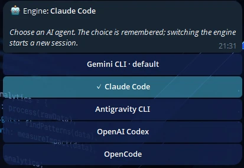
В інтерфейсі бота агент називається «рушій»: кнопка «🤖 Рушій» і команда /engine.
Команда /engine показує агентів, доступних вам на цій машині. Вибір запам’ятовується для кожного користувача, зміна агента починає нову сесію.
/engine claude
/engine opencodeАгенти, яких немає на сервері, не пропонуються. Агент, який запускається, але не авторизований (немає входу або ключа API), позначений «⚠️ потрібен вхід». Агент за замовчуванням задається налаштуванням DEFAULT_ENGINE.
In the bot’s interface an agent is called an “engine”: the “🤖 Engine” button and the /engine command.
The /engine command shows the agents available to you on this machine. The choice is remembered for each user, and changing the agent starts a new session.
/engine claude
/engine opencodeAgents that are not on the server are not offered. An agent that starts but is not authorized (no sign-in or API key) is marked “⚠️ sign-in needed”. The default agent is set with the DEFAULT_ENGINE setting.
Выбор моделиВибір моделіChoosing a model#
Команда /model показывает модели текущего агента (список присылает сам агент) и уровень рассуждений, где он есть: у Claude Code и Antigravity CLI.
- По умолчанию стоит «Авто»: модель выбирает сам агент.
- Выбор запоминается отдельно для каждого агента и применяется со следующего запроса, без перезапуска сессии.
- Вверху экрана — кнопки с последними выбранными моделями.
- Самый быстрый способ — поиск:
/model sonnetпокажет все подходящие модели кнопками.

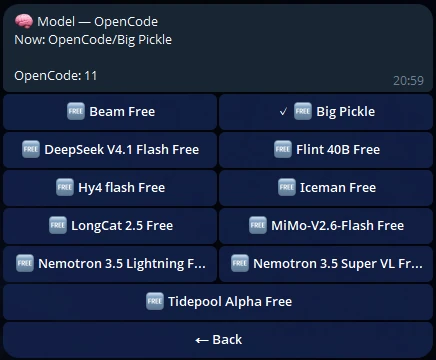
Команда /model показує моделі поточного агента (список надсилає сам агент) і рівень міркувань, де він є: у Claude Code й Antigravity CLI.
- За замовчуванням стоїть «Авто»: модель обирає сам агент.
- Вибір запам’ятовується окремо для кожного агента й застосовується з наступного запиту, без перезапуску сесії.
- Угорі екрана — кнопки з останніми обраними моделями.
- Найшвидший спосіб — пошук:
/model sonnetпокаже всі відповідні моделі кнопками.
The /model command shows the models of the current agent (the agent itself sends the list) and the reasoning level where there is one: in Claude Code and Antigravity CLI.
- The default is “Auto”: the agent chooses the model itself.
- The choice is remembered separately for each agent and applies from the next request, without restarting the session.
- At the top of the screen are buttons with the recently selected models.
- The fastest way is search:
/model sonnetshows all matching models as buttons.
OpenCode и бесплатные моделиOpenCode і безкоштовні моделіOpenCode and free models#
OpenCode берёт модели тех провайдеров, чьи ключи есть в .env бота или подключены командой opencode auth login, плюс бесплатные модели, которым ключ не нужен.
- Каждый ключ добавляет группу моделей в
/model: Anthropic, OpenAI, Gemini, OpenRouter, Groq, DeepSeek, Mistral и другие провайдеры OpenCode. - OpenRouter даёт сотни моделей разных разработчиков по одному ключу.
- Моделей много, поэтому сначала выбирается группа («🆓 Бесплатные» или провайдер), а внутри неё модели листаются страницами. У агрегаторов внутри группы есть ещё и разработчики моделей.
- Модели, которые не умеют вызывать инструменты (генерация картинок, музыки), не показываются.
- После добавления нового ключа список моделей обновляется сам: при перезапуске бота или при следующем
/model.
Бесплатные модели могут использовать запросы для обучения. Не отправляйте в них секреты и закрытый код. Ключи и пароли передавайте проекту через /files.
OpenCode бере моделі тих провайдерів, чиї ключі є в .env бота або підключені командою opencode auth login, плюс безкоштовні моделі, яким ключ не потрібен.
- Кожен ключ додає групу моделей у
/model: Anthropic, OpenAI, Gemini, OpenRouter, Groq, DeepSeek, Mistral та інші провайдери OpenCode. - OpenRouter дає сотні моделей різних розробників за одним ключем.
- Моделей багато, тому спочатку обирається група («🆓 Безкоштовні» або провайдер), а всередині неї моделі гортаються сторінками. В агрегаторів усередині групи є ще й розробники моделей.
- Моделі, які не вміють викликати інструменти (генерація зображень, музики), не показуються.
- Після додавання нового ключа список моделей оновлюється сам: під час перезапуску бота або наступного
/model.
Безкоштовні моделі можуть використовувати запити для навчання. Не надсилайте в них секрети й закритий код. Ключі та паролі передавайте проєкту через /files.
OpenCode takes the models of the providers whose keys are in the bot’s .env or are connected with the opencode auth login command, plus free models that need no key.
- Each key adds a group of models to
/model: Anthropic, OpenAI, Gemini, OpenRouter, Groq, DeepSeek, Mistral and other OpenCode providers. - OpenRouter gives hundreds of models from different developers with one key.
- There are many models, so you first choose a group (“🆓 Free” or a provider), and inside it you page through the models. Aggregators also have model developers inside the group.
- Models that cannot call tools (image or music generation) are not shown.
- After a new key is added, the model list updates by itself: on a bot restart or on the next
/model.
Free models may use requests for training. Do not send secrets or private code to them. Pass keys and passwords to the project through /files.
ФайлыФайлиFiles#
Файлы для агентаФайли для агентаFiles for the agent#
Фото или файл (текст, PDF, таблица и так далее, до 20 МБ) можно отправить боту: подпись становится запросом. Файл сохраняется на машине с ботом, агент получает путь к нему и читает его своими инструментами. Изображения агент получает ещё и как картинку, если умеет с ними работать.
- Альбом из нескольких фото или файлов обрабатывается одним запросом.
- Архивы
.zip,.tar,.tar.gz,.tgzбот распаковывает сам (не больше 500 файлов и 100 МБ) и передаёт агенту список файлов..7zи.rarостаются обычным файлом. - Присланные файлы хранятся 7 дней (
FILES_KEEP_DAYS).
Фото або файл (текст, PDF, таблиця тощо, до 20 МБ) можна надіслати боту: підпис стає запитом. Файл зберігається на машині з ботом, агент отримує шлях до нього й читає його своїми інструментами. Зображення агент отримує ще й як картинку, якщо вміє з ними працювати.
- Альбом із кількох фото або файлів обробляється одним запитом.
- Архіви
.zip,.tar,.tar.gz,.tgzбот розпаковує сам (не більше 500 файлів і 100 МБ) і передає агенту список файлів..7zі.rarзалишаються звичайним файлом. - Надіслані файли зберігаються 7 днів (
FILES_KEEP_DAYS).
You can send the bot a photo or a file (text, PDF, spreadsheet and so on, up to 20 MB): the caption becomes the request. The file is saved on the machine with the bot, and the agent gets the path to it and reads it with its own tools. The agent also gets images as a picture if it can work with them.
- An album of several photos or files is handled as one request.
- The bot unpacks
.zip,.tar,.tar.gzand.tgzarchives by itself (no more than 500 files and 100 MB) and passes the list of files to the agent..7zand.rarstay a regular file. - Files you send are kept for 7 days (
FILES_KEEP_DAYS).
Файлы от агентаФайли від агентаFiles from the agent#
Агент может создать файл и прислать его в чат: отчёт, таблицу, картинку, архив. Просто попросите: «пришли результат файлом». Файл появляется прямо в ответе: JPEG и PNG — изображением, остальное — документом.

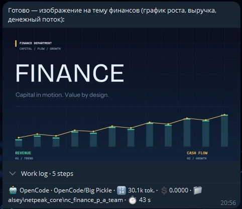
Отправляются только файлы из папки проекта и из каталога исходящих файлов бота. Файлы с секретами (.env, ключи, база и журналы бота, папка .git) в чат не отправляются.
Агент може створити файл і надіслати його в чат: звіт, таблицю, зображення, архів. Просто попросіть: «надішли результат файлом». Файл з’являється прямо у відповіді: JPEG і PNG — зображенням, решта — документом.
Надсилаються лише файли з папки проєкту та з каталогу вихідних файлів бота. Файли із секретами (.env, ключі, база й журнали бота, папка .git) у чат не надсилаються.
The agent can create a file and send it to the chat: a report, a spreadsheet, a picture, an archive. Just ask: “send the result as a file”. The file appears right in the answer: JPEG and PNG as an image, everything else as a document.
Only files from the project folder and from the bot’s outgoing files folder are sent. Files with secrets (.env, keys, the bot’s database and logs, the .git folder) are not sent to the chat.
Файлы проекта и секреты: /filesФайли проєкту й секрети: /filesProject files and secrets: /files#
Всё, что вы пишете боту или отправляете ему файлом, уходит агенту, а значит, в запрос к модели. Для паролей, токенов и ключей это не подходит. Команда /files кладёт файл прямо в папку проекта, минуя агента.

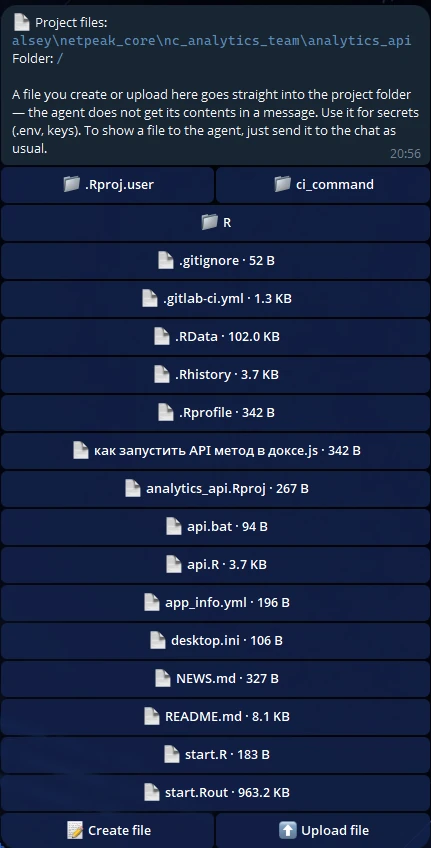
- Список.
/filesпоказывает файлы и папки текущего проекта, вместе со скрытыми вроде.env(без.git,node_modulesи ссылок). По папкам можно ходить кнопками, у файла есть карточка с размером и датой изменения. - «📝 Создать файл». Бот спрашивает имя, можно с подпапкой:
config/.env. Затем вы присылаете содержимое одним сообщением (до 3500 символов). Сообщение с содержимым сразу удаляется из чата; в базу и журналы оно не пишется. - «⬆️ Загрузить файл». Следующий присланный файл или альбом сохраняется в открытую папку проекта под своим именем, а сообщение с ним удаляется из чата. Ожидание одноразовое и истекает через 10 минут.
- Удаление — из карточки файла, с подтверждением. Существующий файл заменяется только после вопроса «Заменить?».

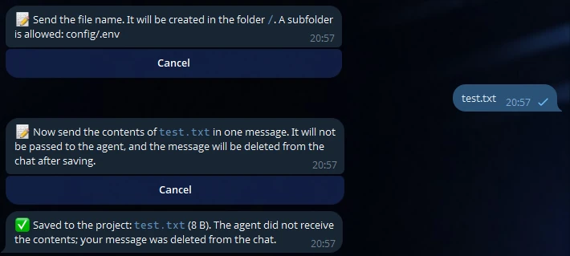
Без нажатия кнопки всё работает как раньше: файлы и изображения, отправленные в чат, уходят агенту.
Кто может менять файлы: администратор; сотрудник — в своём личном пространстве, а в общем корне — с уровнем «Обычный» или «Полный». Смотреть список может любой. Бот не пишет и не удаляет за пределами папки проекта и не ходит по ссылкам.
Что это даёт и чего не даёт. Секрет не попадает в запрос к модели от вас. Сам файл агенту доступен, иначе приложения, которые он пишет и запускает, не смогли бы им пользоваться. Бот регулярно напоминает агенту: файлы с секретами не открывать и не выводить, на настройки ссылаться по именам, а за недостающим значением отправлять вас в
/files. Это указание, а не запрет: для особо чувствительных данных выбирайте модель провайдера, который не обучается на запросах.
Усе, що ви пишете боту або надсилаєте йому файлом, іде агенту, а отже, у запит до моделі. Для паролів, токенів і ключів це не підходить. Команда /files кладе файл прямо в папку проєкту, оминаючи агента.
- Список.
/filesпоказує файли й папки поточного проєкту, разом із прихованими на кшталт.env(без.git,node_modulesі посилань). Папками можна переходити кнопками, у файлу є картка з розміром і датою зміни. - «📝 Створити файл». Бот запитує ім’я, можна з підпапкою:
config/.env. Потім ви надсилаєте вміст одним повідомленням (до 3500 символів). Повідомлення з вмістом одразу видаляється з чату; у базу й журнали воно не пишеться. - «⬆️ Завантажити файл». Наступний надісланий файл або альбом зберігається у відкриту папку проєкту під своїм іменем, а повідомлення з ним видаляється з чату. Очікування одноразове і спливає через 10 хвилин.
- Видалення — з картки файлу, з підтвердженням. Наявний файл замінюється лише після запитання «Замінити?».
Без натискання кнопки все працює як раніше: файли й зображення, надіслані в чат, ідуть агенту.
Хто може змінювати файли: адміністратор; співробітник — у своєму особистому просторі, а в спільному корені — з рівнем «Звичайний» або «Повний». Переглядати список може будь-хто. Бот не пише й не видаляє за межами папки проєкту і не переходить за посиланнями.
Що це дає і чого не дає. Секрет не потрапляє в запит до моделі від вас. Сам файл агенту доступний, інакше застосунки, які він пише й запускає, не змогли б ним користуватися. Бот регулярно нагадує агенту: файли із секретами не відкривати й не виводити, на налаштування посилатися за іменами, а по значення, якого бракує, відправляти вас у
/files. Це вказівка, а не заборона: для особливо чутливих даних обирайте модель провайдера, який не навчається на запитах.
Everything you write to the bot or send it as a file goes to the agent, and therefore into a model request. That is not suitable for passwords, tokens and keys. The /files command puts a file straight into the project folder, bypassing the agent.
- List.
/filesshows the files and folders of the current project, including hidden ones such as.env(without.git,node_modulesand links). You can browse through folders with buttons, and a file has a card with its size and modification date. - “📝 Create file”. The bot asks for a name, optionally with a subfolder:
config/.env. Then you send the contents in one message (up to 3500 characters). The message with the contents is deleted from the chat right away; it is not written to the database or the logs. - “⬆️ Upload file”. The next file or album you send is saved to the open project folder under its own name, and the message with it is deleted from the chat. The wait is one-off and expires in 10 minutes.
- Deleting — from the file card, with a confirmation. An existing file is replaced only after a “Replace?” question.
Without pressing a button, everything works as before: files and images sent to the chat go to the agent.
Who can change files: the administrator; a teammate — in their personal workspace, and in a shared root — with the “Standard” or “Full” level. Anyone can view the list. The bot does not write or delete outside the project folder and does not follow links.
What this gives you and what it does not. The secret does not get into a model request from you. The file itself is available to the agent, otherwise the applications it writes and runs could not use it. The bot regularly reminds the agent: do not open or print files with secrets, refer to settings by name, and send you to
/filesfor a missing value. This is an instruction, not a ban: for especially sensitive data, choose a model from a provider that does not train on requests.
Git: GitHub и GitLabGit: GitHub і GitLabGit: GitHub and GitLab#
Команда /git связывает проекты с GitHub, GitLab.com и своими серверами GitLab и GitHub Enterprise. Подключить аккаунт, клонировать репозиторий, посмотреть изменения, отправить код и открыть запрос на слияние можно кнопками, не открывая терминал.

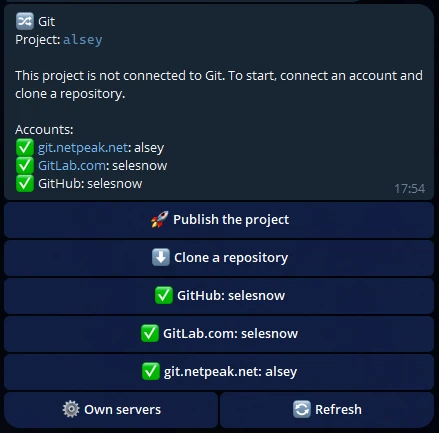
Команда /git пов’язує проєкти з GitHub, GitLab.com і своїми серверами GitLab та GitHub Enterprise. Підключити акаунт, клонувати репозиторій, переглянути зміни, надіслати код і відкрити запит на злиття можна кнопками, не відкриваючи термінал.
The /git command connects projects to GitHub, GitLab.com and your own GitLab and GitHub Enterprise servers. You can connect an account, clone a repository, view changes, push code and open a merge request with buttons, without opening a terminal.
Что нужноЩо потрібноWhat you need#
На машине с ботом должен быть установлен git. Это системная программа, а не зависимость бота; без неё раздел отвечает, что недоступен. Если git не в PATH, укажите путь в настройке GIT_COMMAND.
На машині з ботом має бути встановлений git. Це системна програма, а не залежність бота; без неї розділ відповідає, що недоступний. Якщо git не в PATH, вкажіть шлях у налаштуванні GIT_COMMAND.
git must be installed on the machine with the bot. It is a system program, not a dependency of the bot; without it the section answers that it is unavailable. If git is not in PATH, set the path in the GIT_COMMAND setting.
Вход без токенаВхід без токенаSign in without a token#
GitHub и GitLab.com подключаются по ссылке и короткому коду:
/git→ «➕ Подключить GitHub» или «➕ Подключить GitLab.com».- Нажмите «🔗 Войти без токена». Бот покажет ссылку и код.
- Откройте ссылку, введите код и подтвердите доступ на сайте сервиса.
- Через несколько секунд бот сам напишет, что аккаунт подключён.
Создавать токен и присылать что-то секретное в чат не нужно. Это работает в любой установке без настройки.
У GitLab такой вход действует два часа, и бот сам продлевает его перед каждой операцией. Если сервис перестал принимать вход, аккаунт отключается, и бот просит подключить его заново. У GitHub вход бессрочный, пока вы не отключите аккаунт или не отзовёте доступ в настройках GitHub.
GitHub і GitLab.com підключаються за посиланням і коротким кодом:
/git→ «➕ Підключити GitHub» або «➕ Підключити GitLab.com».- Натисніть «🔗 Увійти без токена». Бот покаже посилання і код.
- Відкрийте посилання, введіть код і підтвердьте доступ на сайті сервісу.
- За кілька секунд бот сам напише, що акаунт підключено.
Створювати токен і надсилати щось секретне в чат не потрібно. Це працює в будь-якому встановленні без налаштування.
У GitLab такий вхід діє дві години, і бот сам продовжує його перед кожною операцією. Якщо сервіс перестав приймати вхід, акаунт відключається, і бот просить підключити його знову. У GitHub вхід безстроковий, доки ви не відключите акаунт або не відкличете доступ у налаштуваннях GitHub.
GitHub and GitLab.com are connected with a link and a short code:
/git→ “➕ Connect GitHub” or “➕ Connect GitLab.com”.- Press “🔗 Sign in without a token”. The bot shows a link and a code.
- Open the link, enter the code and confirm access on the service’s site.
- In a few seconds the bot tells you by itself that the account is connected.
You do not need to create a token or send anything secret to the chat. This works in any installation without setup.
On GitLab such a sign-in lasts two hours, and the bot renews it by itself before every operation. If the service stops accepting the sign-in, the account is disconnected and the bot asks you to connect it again. On GitHub the sign-in does not expire until you disconnect the account or revoke access in the GitHub settings.
Вход по токену доступаВхід за токеном доступуSign in with an access token#
Нажмите «➕ Подключить …»: бот даст ссылку на страницу токенов сервиса и список нужных прав. Создайте токен и пришлите его одним сообщением.
- Сообщение с токеном сразу удаляется из чата и агенту не передаётся.
- Бот проверяет токен в сервисе, показывает, кто подключён и до какого числа токен действует, и предупреждает, если прав не хватает.
- Нужные права: у GitLab —
api,read_repository,write_repository(безapiне работают публикация и запросы на слияние), у GitHub —repo. - За неделю, за день и по истечении срока токена бот напишет владельцу аккаунта.
- Отключение аккаунта в его карточке удаляет токен из бота.
Натисніть «➕ Підключити …»: бот дасть посилання на сторінку токенів сервісу і список потрібних прав. Створіть токен і надішліть його одним повідомленням.
- Повідомлення з токеном одразу видаляється з чату й агенту не передається.
- Бот перевіряє токен у сервісі, показує, хто підключений і до якого числа токен діє, і попереджає, якщо прав бракує.
- Потрібні права: у GitLab —
api,read_repository,write_repository(безapiне працюють публікація та запити на злиття), у GitHub —repo. - За тиждень, за день і після завершення терміну дії токена бот напише власнику акаунта.
- Відключення акаунта в його картці видаляє токен із бота.
Press “➕ Connect …”: the bot gives you a link to the service’s tokens page and the list of required permissions. Create a token and send it in one message.
- The message with the token is deleted from the chat right away and is not passed to the agent.
- The bot checks the token with the service, shows who is connected and until what date the token is valid, and warns you if permissions are missing.
- Required permissions: on GitLab —
api,read_repository,write_repository(withoutapi, publishing and merge requests do not work), on GitHub —repo. - A week before, a day before and when the token expires, the bot writes to the account owner.
- Disconnecting the account on its card removes the token from the bot.
Свои серверыСвої сервериOwn servers#
GitLab и GitHub Enterprise вашей компании добавляет администратор прямо в боте: /git → «⚙️ Свои серверы» → «➕ GitLab» или «➕ GitHub Enterprise» → адрес сервера, например https://git.example.com.
Бот проверяет, что по адресу отвечает сервер нужного вида. После этого каждый пользователь может подключить на нём свой аккаунт токеном доступа. Там же сервер переименовывается и убирается — вместе с подключёнными к нему аккаунтами.
Вход по ссылке и коду работает только для GitHub.com и GitLab.com. Свои серверы подключаются токеном.
GitLab і GitHub Enterprise вашої компанії додає адміністратор прямо в боті: /git → «⚙️ Свої сервери» → «➕ GitLab» або «➕ GitHub Enterprise» → адреса сервера, наприклад https://git.example.com.
Бот перевіряє, що за адресою відповідає сервер потрібного виду. Після цього кожен користувач може підключити на ньому свій акаунт токеном доступу. Там само сервер перейменовується і прибирається — разом із підключеними до нього акаунтами.
Вхід за посиланням і кодом працює лише для GitHub.com і GitLab.com. Свої сервери підключаються токеном.
The administrator adds your company’s GitLab and GitHub Enterprise right in the bot: /git → “⚙️ Own servers” → “➕ GitLab” or “➕ GitHub Enterprise” → the server address, for example https://git.example.com.
The bot checks that a server of the right kind answers at the address. After that, every user can connect their account on it with an access token. The same screen renames and removes a server — together with the accounts connected to it.
Sign-in with a link and a code works only for GitHub.com and GitLab.com. Own servers are connected with a token.
КлонированиеКлонуванняCloning#
«⬇️ Клонировать репозиторий» (или «⬇️ Из Git» в /project) показывает ваши репозитории кнопками: недавно менявшиеся первыми, с поиском по названию. Выбранный клонируется в личное пространство (без него — рядом с текущим проектом) и становится проектом.

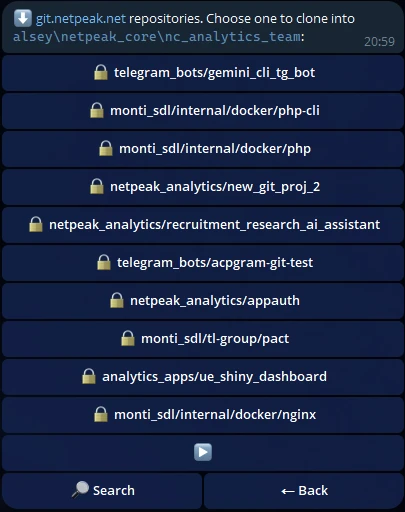
«⬇️ Клонувати репозиторій» (або «⬇️ З Git» у /project) показує ваші репозиторії кнопками: ті, що нещодавно змінювалися, — першими, з пошуком за назвою. Обраний клонується в особистий простір (без нього — поруч із поточним проєктом) і стає проєктом.
“⬇️ Clone a repository” (or “⬇️ From Git” in /project) shows your repositories as buttons: recently changed first, with search by name. The selected one is cloned into your personal workspace (without one — next to the current project) and becomes the project.
Экран репозиторияЕкран репозиторіюThe repository screen#
Когда проект связан с репозиторием, /git показывает ветку, число изменённых файлов, неотправленных коммитов и новых коммитов на сервере. При открытии и по кнопке «Обновить» экран сверяется с сервером.
- «⬇️ Получить» забирает изменения с сервера, если это возможно без слияния. Если истории разошлись, попросите агента объединить изменения («объедини изменения с сервера») и затем отправьте.
- «⬆️ Отправить» отправляет готовые коммиты.
- «💾 Сохранить и отправить» спрашивает описание, коммитит все изменения и отправляет.
Автор коммитов — владелец подключённого аккаунта: его имя и почта передаются и боту, и агенту, так что коммиты агента подписаны вами.
Коли проєкт пов’язаний із репозиторієм, /git показує гілку, кількість змінених файлів, ненадісланих комітів і нових комітів на сервері. Під час відкриття і за кнопкою «Оновити» екран звіряється із сервером.
- «⬇️ Отримати» забирає зміни із сервера, якщо це можливо без злиття. Якщо історії розійшлися, попросіть агента об’єднати зміни («об’єднай зміни із сервера») і потім надішліть.
- «⬆️ Надіслати» надсилає готові коміти.
- «💾 Зберегти й надіслати» запитує опис, комітить усі зміни й надсилає.
Автор комітів — власник підключеного акаунта: його ім’я та пошта передаються і боту, і агенту, тож коміти агента підписані вами.
When the project is connected to a repository, /git shows the branch and the number of changed files, of commits not pushed yet and of new commits on the server. When it opens and on the “Refresh” button, the screen checks with the server.
- “⬇️ Pull” takes the changes from the server if that is possible without a merge. If the histories have diverged, ask the agent to merge the changes (“merge the changes from the server”) and then push.
- “⬆️ Push” sends the finished commits.
- “💾 Save and push” asks for a description, commits all changes and pushes.
The commit author is the owner of the connected account: their name and email are passed to both the bot and the agent, so the agent’s commits are signed by you.
Изменения и диффЗміни й дифChanges and the diff#
«📋 Изменения» открывает список изменённых файлов с пометками (новый, изменён, удалён, переименован) и числом добавленных и убранных строк. Нажатие на файл показывает, что в нём изменилось: короткие изменения — прямо в сообщении, длинные — файлом.

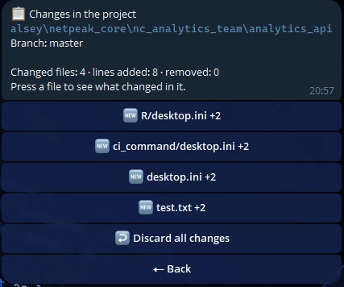

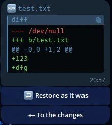
Там же — коммиты, которые ещё не отправлены, и те, что ждут на сервере. Содержимое файлов с секретами не показывается. Всё это бот делает сам, без агента и без запросов к модели.
«📋 Зміни» відкриває список змінених файлів із позначками (новий, змінений, видалений, перейменований) і кількістю доданих і прибраних рядків. Натискання на файл показує, що в ньому змінилося: короткі зміни — прямо в повідомленні, довгі — файлом.
Там само — коміти, які ще не надіслано, і ті, що чекають на сервері. Вміст файлів із секретами не показується. Усе це бот робить сам, без агента й без запитів до моделі.
“📋 Changes” opens the list of changed files with marks (new, modified, deleted, renamed) and the number of added and removed lines. Pressing a file shows what changed in it: short changes right in the message, long ones as a file.
The same screen lists the commits that are not pushed yet and those waiting on the server. The contents of files with secrets are not shown. The bot does all of this by itself, without the agent and without model requests.
ВеткиГілкиBranches#
«🌿 Ветки» показывает локальные ветки и ветки сервера одним списком. Нажатие переключает на ветку, «➕ Новая ветка» создаёт её от текущей.
- При несохранённых изменениях бот не переключает, а предлагает сначала сохранить их.
- Пока агент выполняет запрос, переключение недоступно.
- После переключения следующий запрос начинает новую сессию агента: файлы проекта сменились.
- «Отправить» создаёт новую ветку и на сервере.
Смотреть изменения и ветки может любой пользователь; переключать и создавать ветки — тот, кому разрешено менять файлы проекта.
«🌿 Гілки» показує локальні гілки й гілки сервера одним списком. Натискання перемикає на гілку, «➕ Нова гілка» створює її від поточної.
- Якщо є незбережені зміни, бот не перемикає, а пропонує спочатку зберегти їх.
- Поки агент виконує запит, перемикання недоступне.
- Після перемикання наступний запит починає нову сесію агента: файли проєкту змінилися.
- «Надіслати» створює нову гілку й на сервері.
Переглядати зміни й гілки може будь-який користувач; перемикати і створювати гілки — той, кому дозволено змінювати файли проєкту.
“🌿 Branches” shows local branches and server branches in one list. Pressing a branch switches to it, and “➕ New branch” creates one from the current branch.
- With unsaved changes, the bot does not switch and offers to save them first.
- While the agent is handling a request, switching is unavailable.
- After switching, the next request starts a new agent session: the project files have changed.
- “Push” creates the new branch on the server too.
Any user can view changes and branches; switching and creating branches is for those who are allowed to change the project files.
Отмена измененийСкасування змінDiscarding changes#
В карточке изменённого файла есть «↩️ Вернуть как было», на экране «Изменения» — «↩️ Отменить все изменения». Изменённые и удалённые файлы возвращаются к последнему коммиту, новые удаляются.
Действие необратимо, поэтому бот всегда просит подтверждение. Файлы с секретами не затрагиваются.
У картці зміненого файлу є «↩️ Повернути як було», на екрані «Зміни» — «↩️ Скасувати всі зміни». Змінені й видалені файли повертаються до останнього коміту, нові видаляються.
Дія незворотна, тому бот завжди просить підтвердження. Файли із секретами не зачіпаються.
The card of a changed file has “↩️ Restore as it was”, and the “Changes” screen has “↩️ Discard all changes”. Modified and deleted files return to the last commit, and new files are deleted.
The action cannot be undone, so the bot always asks for confirmation. Files with secrets are not touched.
Публикация проектаПублікація проєктуPublishing a project#
Для папки, которая ещё не связана с сервером, есть «🚀 Опубликовать проект». Вы выбираете:
- сервис;
- место: личное пространство, группу GitLab (с подгруппами) или организацию GitHub — с поиском по названию;
- видимость: закрытый, внутренний (у GitLab) или открытый;
- название репозитория.
Бот создаёт репозиторий, делает первый коммит без файлов с секретами и отправляет его.
Для папки, яка ще не пов’язана із сервером, є «🚀 Опублікувати проєкт». Ви обираєте:
- сервіс;
- місце: особистий простір, групу GitLab (з підгрупами) або організацію GitHub — з пошуком за назвою;
- видимість: закритий, внутрішній (у GitLab) або відкритий;
- назву репозиторію.
Бот створює репозиторій, робить перший коміт без файлів із секретами й надсилає його.
For a folder that is not connected to a server yet, there is “🚀 Publish the project”. You choose:
- the service;
- the place: your personal space, a GitLab group (with subgroups) or a GitHub organization — with search by name;
- the visibility: private, internal (on GitLab) or public;
- the repository name.
The bot creates the repository, makes the first commit without files with secrets and pushes it.
Запрос на слияниеЗапит на злиттяMerge request#
«🔀 Запрос на слияние» открывает запрос из текущей ветки в основную ветку репозитория. Бот спрашивает заголовок (или предлагает описание последнего коммита), создаёт запрос и присылает ссылку. Если открытый запрос из этой ветки уже есть, бот покажет его.
На основной ветке и при неотправленных коммитах бот объяснит, что сделать сначала.
«🔀 Запит на злиття» відкриває запит із поточної гілки в основну гілку репозиторію. Бот запитує заголовок (або пропонує опис останнього коміту), створює запит і надсилає посилання. Якщо відкритий запит із цієї гілки вже є, бот покаже його.
На основній гілці й за наявності ненадісланих комітів бот пояснить, що зробити спочатку.
“🔀 Merge request” opens a request from the current branch into the main branch of the repository. The bot asks for a title (or suggests the description of the last commit), creates the request and sends the link. If an open request from this branch already exists, the bot shows it.
On the main branch and when there are commits not pushed yet, the bot explains what to do first.
Когда отправку предлагает агентКоли надсилання пропонує агентWhen the agent offers to push#
По умолчанию у агента нет входа на сервер. Поэтому просьбу «закоммить и отправь» он выполняет так: делает коммит, а под его ответом появляется кнопка отправки. Без вашего нажатия на сервер ничего не уходит.
За замовчуванням в агента немає входу на сервер. Тому прохання «закоміть і надішли» він виконує так: робить коміт, а під його відповіддю з’являється кнопка надсилання. Без вашого натискання на сервер нічого не йде.
By default the agent has no sign-in for the server. So it handles a “commit and push” request like this: it makes the commit, and a push button appears under its answer. Nothing goes to the server until you press it.
Где хранится вход и как запускается gitДе зберігається вхід і як запускається gitWhere the sign-in is stored and how git is run#
По умолчанию вход хранится только в базе бота. Клонирование, получение и отправку делает бот, а агент работает с репозиторием локально: смотрит состояние, сравнивает, коммитит, создаёт ветки, сливает.
- Вход передаётся процессу
gitчерез окружение на время операции и только для адресов своего сервиса. В настройки репозитория и в адрес он не пишется. - Бот запускает
gitс отключёнными хуками и помощниками входа, без общего и системного конфига (на Linux и macOS), а при включённой песочнице — внутри песочницы того же сотрудника. - При «Сохранить и отправить» файлы с секретами (
.env, ключи, учётные данные) из коммита исключаются и дописываются в.gitignore. Если такой файл закоммитил агент, перед отправкой бот предупреждает и ждёт «Отправить всё равно».
Администратор может выбрать другой режим: GIT_AGENT_AUTH=1. Тогда вход передаётся и процессу агента, и он сам получает и отправляет изменения. Это удобнее, но токен становится виден агенту и может попасть в запрос к модели. Включайте этот режим, только если доверяете моделям, с которыми работают сотрудники.
За замовчуванням вхід зберігається лише в базі бота. Клонування, отримання й надсилання виконує бот, а агент працює з репозиторієм локально: дивиться стан, порівнює, комітить, створює гілки, зливає.
- Вхід передається процесу
gitчерез оточення на час операції і лише для адрес свого сервісу. У налаштування репозиторію і в адресу він не записується. - Бот запускає
gitіз вимкненими хуками й помічниками входу, без загального і системного конфігу (на Linux і macOS), а з увімкненою пісочницею — усередині пісочниці того самого співробітника. - Під час «Зберегти й надіслати» файли із секретами (
.env, ключі, облікові дані) з коміту виключаються й дописуються в.gitignore. Якщо такий файл закомітив агент, перед надсиланням бот попереджає і чекає на «Надіслати все одно».
Адміністратор може обрати інший режим: GIT_AGENT_AUTH=1. Тоді вхід передається і процесу агента, і він сам отримує та надсилає зміни. Це зручніше, але токен стає видимим агенту й може потрапити в запит до моделі. Вмикайте цей режим, лише якщо довіряєте моделям, з якими працюють співробітники.
By default the sign-in is stored only in the bot’s database. The bot does the cloning, pulling and pushing, while the agent works with the repository locally: it checks the status, compares, commits, creates branches and merges.
- The sign-in is passed to the
gitprocess through its environment for the duration of the operation and only for the addresses of its own service. It is not written to the repository settings or the address. - The bot runs
gitwith hooks and credential helpers turned off, without the global and system config (on Linux and macOS), and, when the sandbox is on, inside the same teammate’s sandbox. - On “Save and push”, files with secrets (
.env, keys, credentials) are left out of the commit and appended to.gitignore. If the agent committed such a file, the bot warns you before pushing and waits for “Push anyway”.
The administrator can choose another mode: GIT_AGENT_AUTH=1. The sign-in is then also passed to the agent process, and the agent pulls and pushes changes by itself. This is more convenient, but the token becomes visible to the agent and may end up in a model request. Turn this mode on only if you trust the models your teammates work with.
ОграниченияОбмеженняLimitations#
- Подключаются только репозитории по HTTPS с подключённых сервисов. Репозиторий с адресом SSH или с другого сервера бот показывает, но получать и отправлять в него не может.
- Пока агент выполняет запрос, операции Git не запускаются.
- Настройки самого репозитория (фильтры) выполняются при операциях: намеренно вредоносный агент мог бы перехватить токен во время операции.
- Підключаються лише репозиторії за HTTPS із підключених сервісів. Репозиторій з адресою SSH або з іншого сервера бот показує, але отримувати й надсилати в нього не може.
- Поки агент виконує запит, операції Git не запускаються.
- Налаштування самого репозиторію (фільтри) виконуються під час операцій: навмисно шкідливий агент міг би перехопити токен під час операції.
- Only HTTPS repositories from the connected services can be connected. The bot shows a repository with an SSH address or from another server, but cannot pull from or push to it.
- While the agent is handling a request, Git operations do not start.
- The repository’s own settings (filters) run during operations: a deliberately malicious agent could capture the token while an operation runs.
Работа в командеРобота в командіWorking as a team#
AcpGram можно поставить на общий сервер и выдать доступ коллегам, в том числе тем, кто не работает в терминале: всё управление идёт из Telegram.
AcpGram можна встановити на спільний сервер і надати доступ колегам, зокрема тим, хто не працює в терміналі: усе керування відбувається з Telegram.
You can install AcpGram on a shared server and give access to colleagues, including those who do not work in the terminal: everything is controlled from Telegram.
Как добавить человекаЯк додати людинуHow to add a person#
По умолчанию бот отвечает только главному администратору (настройка ALLOWED_USER_ID). Остальных добавляют двумя способами:
- Приглашение.
/inviteспрашивает уровень доступа и создаёт одноразовую ссылку, которая действует 24 часа. - Запрос доступа. Человек пишет боту, администратор получает запрос и одобряет или отклоняет его кнопками. Запрос отправляется не чаще раза в час; отклонённых бот игнорирует.

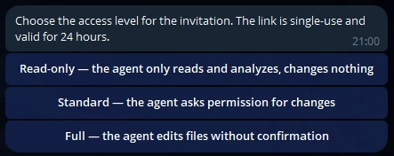
Команда /users показывает список сотрудников. В карточке сотрудника: уровень доступа, доступные агенты и модели, завершение сессии и отзыв доступа.

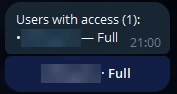
За замовчуванням бот відповідає лише головному адміністратору (налаштування ALLOWED_USER_ID). Решту додають двома способами:
- Запрошення.
/inviteзапитує рівень доступу й створює одноразове посилання, яке діє 24 години. - Запит доступу. Людина пише боту, адміністратор отримує запит і схвалює або відхиляє його кнопками. Запит надсилається не частіше ніж раз на годину; відхилених бот ігнорує.
Команда /users показує список співробітників. У картці співробітника: рівень доступу, доступні агенти й моделі, завершення сесії та відкликання доступу.
By default the bot answers only the main administrator (the ALLOWED_USER_ID setting). Others are added in two ways:
- Invitation.
/inviteasks for the access level and creates a one-time link that is valid for 24 hours. - Access request. The person writes to the bot, and the administrator gets a request and approves or rejects it with buttons. A request is sent no more than once an hour; the bot ignores those who were rejected.
The /users command shows the list of teammates. A teammate’s card has the access level, the available agents and models, ending the session and revoking access.
Уровни доступаРівні доступуAccess levels#
| Уровень | Что это значит |
|---|---|
| Чтение | агент только читает и анализирует, ничего не меняет |
| Обычный | агент спрашивает разрешение на правки и команды; запросы приходят самому сотруднику |
| Полный | агент работает с минимумом подтверждений или совсем без них (зависит от агента) |
| Администратор | полный доступ и управление сотрудниками |
Каждый уровень соответствует своему режиму у каждого агента:
| Уровень | Gemini CLI | Claude Code | Antigravity CLI | Codex | OpenCode |
|---|---|---|---|---|---|
| Чтение | plan |
plan |
plan |
read-only |
plan |
| Обычный | default |
default |
default |
workspace-write |
build |
| Полный | autoEdit |
bypassPermissions |
accept-edits |
agent-full-access |
build |
| Администратор | autoEdit |
bypassPermissions |
accept-edits |
agent-full-access |
build |
На уровне «Полный» Gemini CLI и Antigravity CLI правят файлы без подтверждений, а команды выполняют с подтверждением; Claude Code работает вообще без подтверждений. У OpenCode режимов два, а что агенту можно, задаёт бот: «Чтение» — правки и команды запрещены, «Обычный» — правки, команды и загрузка страниц с подтверждением, «Полный» — всё без подтверждений.
Режим администратора можно изменить в .env: ACP_MODE, CLAUDE_ADMIN_MODE, AGY_ADMIN_MODE, CODEX_ADMIN_MODE, OPENCODE_ADMIN_MODE.
Уровень «Полный» выдавайте только тем, кому доверяете. Без песочницы агент работает с правами учётной записи бота и может менять файлы за пределами проекта.
| Рівень | Що це означає |
|---|---|
| Читання | агент лише читає й аналізує, нічого не змінює |
| Звичайний | агент запитує дозвіл на редагування й команди; запити надходять самому співробітнику |
| Повний | агент працює з мінімумом підтверджень або зовсім без них (залежить від агента) |
| Адміністратор | повний доступ і керування співробітниками |
Кожен рівень відповідає своєму режиму в кожного агента:
| Рівень | Gemini CLI | Claude Code | Antigravity CLI | Codex | OpenCode |
|---|---|---|---|---|---|
| Читання | plan |
plan |
plan |
read-only |
plan |
| Звичайний | default |
default |
default |
workspace-write |
build |
| Повний | autoEdit |
bypassPermissions |
accept-edits |
agent-full-access |
build |
| Адміністратор | autoEdit |
bypassPermissions |
accept-edits |
agent-full-access |
build |
На рівні «Повний» Gemini CLI й Antigravity CLI редагують файли без підтверджень, а команди виконують із підтвердженням; Claude Code працює взагалі без підтверджень. В OpenCode режимів два, а що агенту можна, визначає бот: «Читання» — редагування й команди заборонено, «Звичайний» — редагування, команди й завантаження сторінок із підтвердженням, «Повний» — усе без підтверджень.
Режим адміністратора можна змінити в .env: ACP_MODE, CLAUDE_ADMIN_MODE, AGY_ADMIN_MODE, CODEX_ADMIN_MODE, OPENCODE_ADMIN_MODE.
Рівень «Повний» надавайте лише тим, кому довіряєте. Без пісочниці агент працює з правами облікового запису бота й може змінювати файли за межами проєкту.
| Level | What it means |
|---|---|
| Read-only | the agent only reads and analyzes, and changes nothing |
| Standard | the agent asks permission for edits and commands; the requests go to the teammate themselves |
| Full | the agent works with a minimum of confirmations or with none at all (depends on the agent) |
| Administrator | full access and teammate management |
Each level corresponds to its own mode in each agent:
| Level | Gemini CLI | Claude Code | Antigravity CLI | Codex | OpenCode |
|---|---|---|---|---|---|
| Read-only | plan |
plan |
plan |
read-only |
plan |
| Standard | default |
default |
default |
workspace-write |
build |
| Full | autoEdit |
bypassPermissions |
accept-edits |
agent-full-access |
build |
| Administrator | autoEdit |
bypassPermissions |
accept-edits |
agent-full-access |
build |
At the “Full” level, Gemini CLI and Antigravity CLI edit files without confirmation and run commands with confirmation; Claude Code works with no confirmations at all. OpenCode has two modes, and what the agent may do is set by the bot: “Read-only” — edits and commands are denied, “Standard” — edits, commands and page fetches need confirmation, “Full” — everything without confirmation.
The administrator’s mode can be changed in .env: ACP_MODE, CLAUDE_ADMIN_MODE, AGY_ADMIN_MODE, CODEX_ADMIN_MODE, OPENCODE_ADMIN_MODE.
Give the “Full” level only to people you trust. Without the sandbox, the agent runs with the rights of the bot’s account and can change files outside the project.
Агенты и модели сотрудникаАгенти й моделі співробітникаA teammate’s agents and models#
- Агенты. Новому сотруднику доступен только агент по умолчанию, остальных администратор включает переключателями в его карточке. Агента по умолчанию отключить нельзя. Если забрать агента, в котором сотрудник работает, его сессия закрывается, и он переходит на агента по умолчанию.
- Модели. «🧠 Модели сотрудника» → агент → переключатели моделей. По умолчанию разрешены все. При ограничении вариант «Авто» недоступен: сотрудник работает в выбранной разрешённой модели или в первой из разрешённых.
- Администратору доступны все агенты и модели.
- Агенти. Новому співробітнику доступний лише агент за замовчуванням, решту адміністратор вмикає перемикачами в його картці. Агента за замовчуванням вимкнути не можна. Якщо забрати агента, у якому співробітник працює, його сесія закривається, і він переходить на агента за замовчуванням.
- Моделі. «🧠 Моделі співробітника» → агент → перемикачі моделей. За замовчуванням дозволено всі. За обмеження варіант «Авто» недоступний: співробітник працює в обраній дозволеній моделі або в першій із дозволених.
- Адміністратору доступні всі агенти й моделі.
- Agents. A new teammate has only the default agent; the administrator turns on the others with toggles on the teammate’s card. The default agent cannot be turned off. If you take away the agent a teammate is working in, their session is closed and they move to the default agent.
- Models. “🧠 Employee models” → agent → model toggles. All models are allowed by default. When models are restricted, the “Auto” option is unavailable: the teammate works in the allowed model they selected or in the first of the allowed ones.
- The administrator has access to all agents and models.
Активные сессии и лимитыАктивні сесії та лімітиActive sessions and limits#
Команда /active показывает активные сессии и кнопки их завершения.

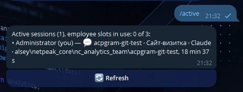
- Одновременно работает не более трёх агентов сотрудников во всех темах и агентах вместе (
MAX_AGENTS). Администратор в этот лимит не входит. - У одного сотрудника — до двух агентов одновременно, у администратора — до четырёх.
- Сессия закрывается через 30 минут простоя (
IDLE_MINUTES).
Команда /active показує активні сесії та кнопки їх завершення.
- Одночасно працює не більше трьох агентів співробітників в усіх темах і агентах разом (
MAX_AGENTS). Адміністратор у цей ліміт не входить. - В одного співробітника — до двох агентів одночасно, в адміністратора — до чотирьох.
- Сесія закривається через 30 хвилин простою (
IDLE_MINUTES).
The /active command shows the active sessions and buttons to end them.
- No more than three teammate agents run at the same time across all topics and agents together (
MAX_AGENTS). The administrator is not counted in this limit. - One teammate can have up to two agents at the same time, the administrator up to four.
- A session closes after 30 minutes of idle time (
IDLE_MINUTES).
Расход: /usageВитрати: /usageUsage: /usage#
Команда /usage показывает администратору запросы, токены и стоимость по каждому сотруднику за 24 часа, 7 и 30 дней.

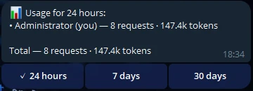
Команда /usage показує адміністратору запити, токени й вартість за кожним співробітником за 24 години, 7 і 30 днів.
Личные пространстваОсобисті просториPersonal workspaces#
По умолчанию все сотрудники ходят по одному корню проектов. Личные пространства дают каждому свою папку:
PROJECTS_ROOT=/srv/projects
USER_WORKSPACES=1Папка <корень>/<Telegram ID> создаётся сама при первом обращении сотрудника к боту.
- Сотрудник выбирает проекты только в своей папке: чужие папки не показываются в
/project, не находятся поиском и не выбираются путём. Подняться выше своей папки нельзя. - Пути он видит от своей папки («Моё пространство»,
site,site/landing): расположение папок на сервере ему не показывается. - Кнопка «➕ Новый проект» создаёт папку в его пространстве.
- Администратор видит весь корень; личные папки подписаны именами сотрудников, а папка сотрудника указана в его карточке в
/users. - Перед каждым запуском агента бот проверяет, что папка проекта существует и лежит в пространстве сотрудника.
- Папки сотрудников бот не переносит и не удаляет, в том числе при отзыве доступа.
Личные пространства ограничивают выбор рабочей папки в боте. Сам процесс агента изолирует песочница.
За замовчуванням усі співробітники працюють в одному корені проєктів. Особисті простори дають кожному свою папку:
PROJECTS_ROOT=/srv/projects
USER_WORKSPACES=1Папка <корінь>/<Telegram ID> створюється сама під час першого звернення співробітника до бота.
- Співробітник обирає проєкти лише у своїй папці: чужі папки не показуються в
/project, не знаходяться пошуком і не обираються шляхом. Піднятися вище своєї папки не можна. - Шляхи він бачить від своєї папки («Мій простір»,
site,site/landing): розташування папок на сервері йому не показується. - Кнопка «➕ Новий проєкт» створює папку в його просторі.
- Адміністратор бачить увесь корінь; особисті папки підписані іменами співробітників, а папку співробітника вказано в його картці в
/users. - Перед кожним запуском агента бот перевіряє, що папка проєкту існує і лежить у просторі співробітника.
- Папки співробітників бот не переносить і не видаляє, зокрема й у разі відкликання доступу.
Особисті простори обмежують вибір робочої папки в боті. Сам процес агента ізолює пісочниця.
By default all teammates browse the same projects root. Personal workspaces give each one a folder of their own:
PROJECTS_ROOT=/srv/projects
USER_WORKSPACES=1The <root>/<Telegram ID> folder is created by itself when the teammate first contacts the bot.
- A teammate chooses projects only in their own folder: other people’s folders are not shown in
/project, are not found by search and cannot be selected by path. Going above their own folder is not possible. - They see paths relative to their folder (“My workspace”,
site,site/landing): the location of the folders on the server is not shown to them. - The “➕ New project” button creates a folder in their workspace.
- The administrator sees the whole root; personal folders are labelled with the teammates’ names, and a teammate’s folder is shown on their card in
/users. - Before every agent start, the bot checks that the project folder exists and lies inside the teammate’s workspace.
- The bot does not move or delete teammates’ folders, including when access is revoked.
Personal workspaces limit which working folder can be chosen in the bot. The agent process itself is isolated by the sandbox.
Песочница агента (Linux)Пісочниця агента (Linux)Agent sandbox (Linux)#
Без песочницы агент работает с правами учётной записи бота: рабочая папка задаёт, где он начинает, но не запрещает читать и писать за её пределами. Песочница закрывает этот вопрос.
sudo apt install bubblewrapAGENT_SANDBOX=bwrapАгент каждого сотрудника запускается через bubblewrap, системную утилиту Linux. Зависимостей у бота не прибавляется.
Внутри песочницы агент видит только:
- на запись — папку проектов сотрудника, его отдельную домашнюю папку и каталог исходящих файлов;
- на чтение — его загруженные файлы, систему (
/usr,/etcи подобное), Node.js и программы агента.
Настроек и базы бота, домашней папки учётной записи бота, чужих папок и чужих процессов в песочнице нет: на попытку прочитать чужой файл агент получает «No such file or directory».
Что ещё важно:
- У каждого свои настройки агента. Домашняя папка у сотрудника своя, поэтому история сессий, настройки и входы агентов у всех раздельные.
- Агент должен работать без входа по подписке. Вход, сохранённый в домашней папке учётной записи бота (
codex login, вход Google, подписка Claude), в песочнице не виден. OpenCode на бесплатных моделях работает вообще без ключей, остальные агенты — по ключу API из.env. - Уровень «Полный» становится безопаснее. Агент не спрашивает разрешений, но изменить может только пространство своего сотрудника.
- Администратор работает без песочницы.
- Проверка при запуске. Бот проверяет, что bubblewrap запускается, секреты бота изнутри не видны, а агенты в песочнице стартуют. Не работает песочница или агент по умолчанию — бот не запускается и пишет причину. Остальные агенты, не запустившиеся в песочнице, сотрудникам не предлагаются.
- Агент установлен в нестандартном месте — добавьте его папку в
SANDBOX_RO_PATHS. - Сессии, начатые до включения песочницы, в ней не возобновляются.
- Windows, macOS, Docker. Песочницы там нет. С настройкой
AGENT_SANDBOXбот на Windows и macOS не запустится, а не будет работать молча без изоляции.
Ubuntu 24.04 и новее: пространства имён пользователя могут быть закрыты AppArmor. Если бот при запуске сообщает, что песочница не работает, выполните:
sudo sysctl -w kernel.apparmor_restrict_unprivileged_userns=0Для постоянства добавьте эту настройку файлом в /etc/sysctl.d/ либо создайте профиль AppArmor для bwrap.
Чего песочница не делает. Она не ограничивает сеть: агенту нужен доступ к моделям, поэтому он достаёт и до служб на самом сервере и в локальной сети. Она не прячет ключ API самого агента: он передаётся агенту в окружении, поэтому ставьте на ключ лимит расхода у провайдера. И она не ограничивает диск, память и процессор.
Без пісочниці агент працює з правами облікового запису бота: робоча папка визначає, де він починає, але не забороняє читати й писати за її межами. Пісочниця закриває це питання.
sudo apt install bubblewrapAGENT_SANDBOX=bwrapАгент кожного співробітника запускається через bubblewrap, системну утиліту Linux. Залежностей у бота не додається.
Усередині пісочниці агент бачить лише:
- на запис — папку проєктів співробітника, його окрему домашню папку й каталог вихідних файлів;
- на читання — його завантажені файли, систему (
/usr,/etcтощо), Node.js і програми агента.
Налаштувань і бази бота, домашньої папки облікового запису бота, чужих папок і чужих процесів у пісочниці немає: на спробу прочитати чужий файл агент отримує «No such file or directory».
Що ще важливо:
- У кожного свої налаштування агента. Домашня папка у співробітника своя, тому історія сесій, налаштування і входи агентів у всіх окремі.
- Агент має працювати без входу за підпискою. Вхід, збережений у домашній папці облікового запису бота (
codex login, вхід Google, підписка Claude), у пісочниці не видно. OpenCode на безкоштовних моделях працює взагалі без ключів, решта агентів — за ключем API з.env. - Рівень «Повний» стає безпечнішим. Агент не запитує дозволів, але змінити може лише простір свого співробітника.
- Адміністратор працює без пісочниці.
- Перевірка під час запуску. Бот перевіряє, що bubblewrap запускається, секрети бота зсередини не видно, а агенти в пісочниці стартують. Не працює пісочниця або агент за замовчуванням — бот не запускається і пише причину. Решта агентів, що не запустилися в пісочниці, співробітникам не пропонуються.
- Агент встановлено в нестандартному місці — додайте його папку в
SANDBOX_RO_PATHS. - Сесії, розпочаті до ввімкнення пісочниці, у ній не відновлюються.
- Windows, macOS, Docker. Пісочниці там немає. З налаштуванням
AGENT_SANDBOXбот на Windows і macOS не запуститься, а не працюватиме мовчки без ізоляції.
Ubuntu 24.04 і новіші: простори імен користувача можуть бути закриті AppArmor. Якщо бот під час запуску повідомляє, що пісочниця не працює, виконайте:
sudo sysctl -w kernel.apparmor_restrict_unprivileged_userns=0Щоб це діяло постійно, додайте це налаштування файлом у /etc/sysctl.d/ або створіть профіль AppArmor для bwrap.
Чого пісочниця не робить. Вона не обмежує мережу: агенту потрібен доступ до моделей, тому він дістається і до служб на самому сервері та в локальній мережі. Вона не ховає ключ API самого агента: він передається агенту в оточенні, тому ставте на ключ ліміт витрат у провайдера. І вона не обмежує диск, пам’ять і процесор.
Without the sandbox, the agent runs with the rights of the bot’s account: the working folder sets where it starts, but does not stop it from reading and writing outside that folder. The sandbox closes this gap.
sudo apt install bubblewrapAGENT_SANDBOX=bwrapEach teammate’s agent is started through bubblewrap, a Linux system utility. The bot gets no new dependencies.
Inside the sandbox the agent sees only:
- read-write — the teammate’s projects folder, their separate home folder and the outgoing files folder;
- read-only — their uploaded files, the system (
/usr,/etcand the like), Node.js and the agent programs.
The bot’s settings and database, the home folder of the bot’s account, other people’s folders and other people’s processes do not exist in the sandbox: when the agent tries to read someone else’s file, it gets “No such file or directory”.
What else matters:
- Everyone has their own agent settings. Each teammate has a home folder of their own, so session history, settings and agent sign-ins are separate for everyone.
- The agent must work without a subscription sign-in. A sign-in saved in the home folder of the bot’s account (
codex login, Google sign-in, a Claude subscription) is not visible in the sandbox. OpenCode on free models works with no keys at all; the other agents use an API key from.env. - The “Full” level becomes safer. The agent asks for no permissions, but can change only its teammate’s workspace.
- The administrator works without the sandbox.
- Startup check. The bot checks that bubblewrap runs, that the bot’s secrets are not visible from inside, and that the agents start in the sandbox. If the sandbox or the default agent does not work, the bot does not start and writes the reason. The other agents that did not start in the sandbox are not offered to teammates.
- The agent is installed in a non-standard place — add its folder to
SANDBOX_RO_PATHS. - Sessions started before the sandbox was turned on are not resumed in it.
- Windows, macOS, Docker. There is no sandbox there. With the
AGENT_SANDBOXsetting, the bot does not start on Windows and macOS rather than silently working without isolation.
Ubuntu 24.04 and later: user namespaces may be blocked by AppArmor. If the bot reports at startup that the sandbox does not work, run:
sudo sysctl -w kernel.apparmor_restrict_unprivileged_userns=0To make it permanent, add this setting as a file in /etc/sysctl.d/ or create an AppArmor profile for bwrap.
What the sandbox does not do. It does not limit the network: the agent needs access to the models, so it can also reach services on the server itself and in the local network. It does not hide the agent’s own API key: the key is passed to the agent in its environment, so set a spending limit on the key at the provider. And it does not limit disk, memory or CPU.
Язык интерфейсаМова інтерфейсуInterface language#
Бот говорит на русском, украинском или английском — по языку вашего Telegram. Для остальных языков используется DEFAULT_LANG (по умолчанию английский). Сменить язык можно командой /language: выбор важнее языка Telegram.
Команды acpgram в терминале (мастер настройки, служба, обновление) говорят на языке системы: русский, украинский, в остальных случаях английский. Язык можно задать настройкой ACPGRAM_LANG.
Бот говорить російською, українською або англійською — відповідно до мови вашого Telegram. Для решти мов використовується DEFAULT_LANG (за замовчуванням англійська). Змінити мову можна командою /language: вибір важливіший за мову Telegram.
Команди acpgram у терміналі (майстер налаштування, служба, оновлення) говорять мовою системи: російська, українська, в інших випадках англійська. Мову можна задати налаштуванням ACPGRAM_LANG.
The bot speaks Russian, Ukrainian or English, following the language of your Telegram. For other languages it uses DEFAULT_LANG (English by default). You can change the language with the /language command: your choice takes priority over the Telegram language.
The acpgram commands in the terminal (setup wizard, service, update) use the system language: Russian, Ukrainian, and English in all other cases. You can set the language with the ACPGRAM_LANG setting.
Настройки: файл .envНалаштування: файл .envSettings: the .env file#
Все настройки лежат в файле .env в папке данных бота: ~/.acpgram при установке через npm, %LOCALAPPDATA%\acpgram или ~/.local/share/acpgram при установке установщиком, корень репозитория при запуске из исходников. Большинство значений записывает мастер (acpgram setup). После правки файла вручную перезапустите службу: acpgram service restart.
Файл .env содержит токен и ключи: не коммитьте его и не пересылайте.
Усі налаштування лежать у файлі .env у папці даних бота: ~/.acpgram у разі встановлення через npm, %LOCALAPPDATA%\acpgram або ~/.local/share/acpgram у разі встановлення інсталятором, корінь репозиторію в разі запуску з вихідного коду. Більшість значень записує майстер (acpgram setup). Після редагування файлу вручну перезапустіть службу: acpgram service restart.
Файл .env містить токен і ключі: не комітьте його й не пересилайте.
All settings live in the .env file in the bot’s data folder: ~/.acpgram when installed through npm, %LOCALAPPDATA%\acpgram or ~/.local/share/acpgram when installed with the installer, and the repository root when running from source. The wizard (acpgram setup) writes most of the values. After editing the file manually, restart the service: acpgram service restart.
The .env file contains the token and keys: do not commit it or send it to anyone.
ОсновныеОсновніMain#
| Переменная | Описание |
|---|---|
TELEGRAM_BOT_TOKEN |
токен бота. Обязательна |
ALLOWED_USER_ID |
числовой Telegram ID главного администратора. Обязательна |
DEFAULT_ENGINE |
агент по умолчанию: gemini, claude, agy, codex или opencode. Если он не установлен, бот не запускается |
DEFAULT_LANG |
язык бота, если язык Telegram пользователя не русский, украинский или английский: en (по умолчанию), ru или uk |
ACPGRAM_LANG |
язык команд acpgram в терминале: ru, uk или en. Обычно не нужна: язык берётся из системы |
ACPGRAM_HOME |
папка данных при установке через npm (по умолчанию ~/.acpgram) |
| Змінна | Опис |
|---|---|
TELEGRAM_BOT_TOKEN |
токен бота. Обов’язкова |
ALLOWED_USER_ID |
числовий Telegram ID головного адміністратора. Обов’язкова |
DEFAULT_ENGINE |
агент за замовчуванням: gemini, claude, agy, codex або opencode. Якщо його не встановлено, бот не запускається |
DEFAULT_LANG |
мова бота, якщо мова Telegram користувача не російська, українська чи англійська: en (за замовчуванням), ru або uk |
ACPGRAM_LANG |
мова команд acpgram у терміналі: ru, uk або en. Зазвичай не потрібна: мова береться із системи |
ACPGRAM_HOME |
папка даних у разі встановлення через npm (за замовчуванням ~/.acpgram) |
| Variable | Description |
|---|---|
TELEGRAM_BOT_TOKEN |
the bot token. Required |
ALLOWED_USER_ID |
the numeric Telegram ID of the main administrator. Required |
DEFAULT_ENGINE |
the default agent: gemini, claude, agy, codex or opencode. If it is not installed, the bot does not start |
DEFAULT_LANG |
the bot language when the user’s Telegram language is not Russian, Ukrainian or English: en (default), ru or uk |
ACPGRAM_LANG |
the language of the acpgram commands in the terminal: ru, uk or en. Usually not needed: the language is taken from the system |
ACPGRAM_HOME |
the data folder when installed through npm (~/.acpgram by default) |
Агенты и ключиАгенти й ключіAgents and keys#
| Переменная | Описание |
|---|---|
GEMINI_API_KEY |
ключ Gemini API. Не нужен, если Gemini CLI уже авторизован |
ANTHROPIC_API_KEY |
ключ Anthropic API для Claude Code (оплата по API, а не по подписке) |
OPENAI_API_KEY |
ключ OpenAI API для Codex и моделей OpenAI в OpenCode |
OPENROUTER_API_KEY, GROQ_API_KEY, DEEPSEEK_API_KEY, MISTRAL_API_KEY |
ключи провайдеров для OpenCode: каждый добавляет группу моделей в /model. Подходят и другие провайдеры OpenCode со своими переменными |
GEMINI_COMMAND |
полный путь к Gemini CLI. Под службой глобальные пакеты npm часто не в PATH |
CLAUDE_COMMAND |
команда моста Claude Code (по умолчанию claude-agent-acp) |
CODEX_COMMAND |
полный путь к мосту Codex (по умолчанию codex-acp) |
AGY_COMMAND |
полный путь к Antigravity CLI (по умолчанию agy) |
OPENCODE_COMMAND |
полный путь к OpenCode (по умолчанию opencode) |
ACP_MODE, CLAUDE_ADMIN_MODE, AGY_ADMIN_MODE, CODEX_ADMIN_MODE, OPENCODE_ADMIN_MODE |
режим каждого агента для администратора (см. уровни доступа) |
AGENT_START_TIMEOUT |
сколько секунд ждать запуска агента (по умолчанию 120) |
Процесс агента получает из ключей API только ключи своего агента: Claude Code — ANTHROPIC_API_KEY, Codex — OPENAI_API_KEY, Gemini CLI и Antigravity CLI — ключи Google, OpenCode — все. Токен бота агенту не передаётся.
| Змінна | Опис |
|---|---|
GEMINI_API_KEY |
ключ Gemini API. Не потрібен, якщо Gemini CLI вже авторизовано |
ANTHROPIC_API_KEY |
ключ Anthropic API для Claude Code (оплата за API, а не за підпискою) |
OPENAI_API_KEY |
ключ OpenAI API для Codex і моделей OpenAI в OpenCode |
OPENROUTER_API_KEY, GROQ_API_KEY, DEEPSEEK_API_KEY, MISTRAL_API_KEY |
ключі провайдерів для OpenCode: кожен додає групу моделей у /model. Підходять й інші провайдери OpenCode зі своїми змінними |
GEMINI_COMMAND |
повний шлях до Gemini CLI. Під службою глобальні пакети npm часто не в PATH |
CLAUDE_COMMAND |
команда моста Claude Code (за замовчуванням claude-agent-acp) |
CODEX_COMMAND |
повний шлях до моста Codex (за замовчуванням codex-acp) |
AGY_COMMAND |
повний шлях до Antigravity CLI (за замовчуванням agy) |
OPENCODE_COMMAND |
повний шлях до OpenCode (за замовчуванням opencode) |
ACP_MODE, CLAUDE_ADMIN_MODE, AGY_ADMIN_MODE, CODEX_ADMIN_MODE, OPENCODE_ADMIN_MODE |
режим кожного агента для адміністратора (див. рівні доступу) |
AGENT_START_TIMEOUT |
скільки секунд чекати запуску агента (за замовчуванням 120) |
Процес агента отримує з ключів API лише ключі свого агента: Claude Code — ANTHROPIC_API_KEY, Codex — OPENAI_API_KEY, Gemini CLI й Antigravity CLI — ключі Google, OpenCode — усі. Токен бота агенту не передається.
| Variable | Description |
|---|---|
GEMINI_API_KEY |
Gemini API key. Not needed if Gemini CLI is already authorized |
ANTHROPIC_API_KEY |
Anthropic API key for Claude Code (API billing instead of a subscription) |
OPENAI_API_KEY |
OpenAI API key for Codex and for OpenAI models in OpenCode |
OPENROUTER_API_KEY, GROQ_API_KEY, DEEPSEEK_API_KEY, MISTRAL_API_KEY |
provider keys for OpenCode: each adds a group of models to /model. Other OpenCode providers work too, with their own variables |
GEMINI_COMMAND |
full path to Gemini CLI. Under a service, global npm packages are often not in PATH |
CLAUDE_COMMAND |
the Claude Code bridge command (claude-agent-acp by default) |
CODEX_COMMAND |
full path to the Codex bridge (codex-acp by default) |
AGY_COMMAND |
full path to Antigravity CLI (agy by default) |
OPENCODE_COMMAND |
full path to OpenCode (opencode by default) |
ACP_MODE, CLAUDE_ADMIN_MODE, AGY_ADMIN_MODE, CODEX_ADMIN_MODE, OPENCODE_ADMIN_MODE |
the mode of each agent for the administrator (see access levels) |
AGENT_START_TIMEOUT |
how many seconds to wait for the agent to start (120 by default) |
Of the API keys, the agent process gets only the keys of its own agent: Claude Code — ANTHROPIC_API_KEY, Codex — OPENAI_API_KEY, Gemini CLI and Antigravity CLI — the Google keys, OpenCode — all of them. The bot token is not passed to the agent.
Проекты и командаПроєкти й командаProjects and team#
| Переменная | Описание |
|---|---|
PROJECTS_ROOT |
корень проектов: агент выбирает рабочую папку только внутри него. Без него — любая папка на машине |
USER_WORKSPACES |
1 — личные пространства: у каждого сотрудника своя папка <корень>/<Telegram ID>. Нужен PROJECTS_ROOT |
AGENT_SANDBOX |
bwrap — песочница агента (только Linux, нужен пакет bubblewrap) |
SANDBOX_RO_PATHS |
дополнительные папки, которые песочница видит на чтение, через двоеточие |
BWRAP_COMMAND |
путь к bwrap, если его нет в PATH |
MAX_AGENTS |
сколько агентов сотрудников работает одновременно (по умолчанию 3) |
MAX_AGENTS_PER_USER |
сколько агентов одного сотрудника работает одновременно в разных темах (по умолчанию 2) |
ADMIN_MAX_AGENTS |
то же для администратора (по умолчанию 4) |
IDLE_MINUTES |
через сколько минут закрывается простаивающая сессия (по умолчанию 30) |
Выбирайте
PROJECTS_ROOTосознанно: не делайте корнем домашнюю папку или корень диска. БезPROJECTS_ROOTлюбой пользователь с доступом может выбрать проектом любую папку на машине — это режим для личной установки.
| Змінна | Опис |
|---|---|
PROJECTS_ROOT |
корінь проєктів: агент обирає робочу папку лише всередині нього. Без нього — будь-яка папка на машині |
USER_WORKSPACES |
1 — особисті простори: у кожного співробітника своя папка <корінь>/<Telegram ID>. Потрібен PROJECTS_ROOT |
AGENT_SANDBOX |
bwrap — пісочниця агента (лише Linux, потрібен пакет bubblewrap) |
SANDBOX_RO_PATHS |
додаткові папки, які пісочниця бачить на читання, через двокрапку |
BWRAP_COMMAND |
шлях до bwrap, якщо його немає в PATH |
MAX_AGENTS |
скільки агентів співробітників працює одночасно (за замовчуванням 3) |
MAX_AGENTS_PER_USER |
скільки агентів одного співробітника працює одночасно в різних темах (за замовчуванням 2) |
ADMIN_MAX_AGENTS |
те саме для адміністратора (за замовчуванням 4) |
IDLE_MINUTES |
через скільки хвилин закривається сесія, що простоює (за замовчуванням 30) |
Обирайте
PROJECTS_ROOTсвідомо: не робіть коренем домашню папку або корінь диска. БезPROJECTS_ROOTбудь-який користувач із доступом може обрати проєктом будь-яку папку на машині — це режим для особистого встановлення.
| Variable | Description |
|---|---|
PROJECTS_ROOT |
the projects root: the agent chooses a working folder only inside it. Without it — any folder on the machine |
USER_WORKSPACES |
1 — personal workspaces: each teammate has a folder of their own, <root>/<Telegram ID>. Requires PROJECTS_ROOT |
AGENT_SANDBOX |
bwrap — the agent sandbox (Linux only, needs the bubblewrap package) |
SANDBOX_RO_PATHS |
extra folders the sandbox can read, separated by colons |
BWRAP_COMMAND |
path to bwrap if it is not in PATH |
MAX_AGENTS |
how many teammate agents run at the same time (3 by default) |
MAX_AGENTS_PER_USER |
how many agents of one teammate run at the same time in different topics (2 by default) |
ADMIN_MAX_AGENTS |
the same for the administrator (4 by default) |
IDLE_MINUTES |
after how many minutes an idle session is closed (30 by default) |
Choose
PROJECTS_ROOTdeliberately: do not make the home folder or a drive root the root. WithoutPROJECTS_ROOT, any user with access can choose any folder on the machine as a project — this mode is meant for a personal installation.
GitGitGit#
| Переменная | Описание |
|---|---|
GIT_COMMAND |
путь к git, если его нет в PATH |
GIT_AGENT_AUTH |
1 — вход в Git передаётся и агентам: они сами получают и отправляют изменения, но токены им видны. По умолчанию вход только у бота |
GITLAB_URL, GITHUB_URL |
адрес своего GitLab и своего GitHub Enterprise. Не обязательны: администратор добавляет серверы и в самом боте |
GITLAB_NAME, GITHUB_NAME |
названия своих серверов в кнопках |
GITHUB_CLIENT_ID, GITLAB_CLIENT_ID |
идентификаторы своих приложений для входа по ссылке и коду; 0 выключает такой вход для сервиса. По умолчанию — приложения AcpGram |
| Змінна | Опис |
|---|---|
GIT_COMMAND |
шлях до git, якщо його немає в PATH |
GIT_AGENT_AUTH |
1 — вхід у Git передається й агентам: вони самі отримують і надсилають зміни, але токени їм видно. За замовчуванням вхід лише в бота |
GITLAB_URL, GITHUB_URL |
адреса свого GitLab і свого GitHub Enterprise. Не обов’язкові: адміністратор додає сервери й у самому боті |
GITLAB_NAME, GITHUB_NAME |
назви своїх серверів у кнопках |
GITHUB_CLIENT_ID, GITLAB_CLIENT_ID |
ідентифікатори своїх застосунків для входу за посиланням і кодом; 0 вимикає такий вхід для сервісу. За замовчуванням — застосунки AcpGram |
| Variable | Description |
|---|---|
GIT_COMMAND |
path to git if it is not in PATH |
GIT_AGENT_AUTH |
1 — the Git sign-in is also passed to agents: they pull and push changes by themselves, but the tokens are visible to them. By default only the bot has the sign-in |
GITLAB_URL, GITHUB_URL |
the address of your own GitLab and your own GitHub Enterprise. Optional: the administrator can also add servers in the bot itself |
GITLAB_NAME, GITHUB_NAME |
the names of your own servers on the buttons |
GITHUB_CLIENT_ID, GITLAB_CLIENT_ID |
identifiers of your own applications for sign-in with a link and a code; 0 turns that sign-in off for the service. By default — the AcpGram applications |
Лимиты, файлы, интерфейсЛіміти, файли, інтерфейсLimits, files, interface#
| Переменная | Описание |
|---|---|
FILES_DIR |
каталог принятых и исходящих файлов (по умолчанию — папка данных бота) |
FILES_KEEP_DAYS |
сколько дней хранить такие файлы (по умолчанию 7) |
WIDGETS |
1 — показывать /model и /sessions виджетами Telegram. По умолчанию выключено: Telegram пока не принимает виджеты от обычных ботов |
ANIMATED_ICONS |
0 — обычные эмодзи вместо анимированных иконок в черновике |
ACPGRAM_DEBUG |
1 — подробный журнал отправляемого в Telegram в data/debug.log |
| Змінна | Опис |
|---|---|
FILES_DIR |
каталог прийнятих і вихідних файлів (за замовчуванням — папка даних бота) |
FILES_KEEP_DAYS |
скільки днів зберігати такі файли (за замовчуванням 7) |
WIDGETS |
1 — показувати /model і /sessions віджетами Telegram. За замовчуванням вимкнено: Telegram поки не приймає віджети від звичайних ботів |
ANIMATED_ICONS |
0 — звичайні емодзі замість анімованих іконок у чернетці |
ACPGRAM_DEBUG |
1 — докладний журнал того, що надсилається в Telegram, у data/debug.log |
| Variable | Description |
|---|---|
FILES_DIR |
the folder for received and outgoing files (the bot’s data folder by default) |
FILES_KEEP_DAYS |
how many days to keep those files (7 by default) |
WIDGETS |
1 — show /model and /sessions as Telegram widgets. Off by default: Telegram does not accept widgets from regular bots yet |
ANIMATED_ICONS |
0 — regular emoji instead of animated icons in the draft |
ACPGRAM_DEBUG |
1 — a detailed log of what is sent to Telegram, in data/debug.log |
БезопасностьБезпекаSecurity#
Что видит и может агентЩо бачить і може агентWhat the agent sees and can do#
- Бот отвечает только тем, кому вы дали доступ. Остальным он не отвечает.
- Данные остаются у вас. Код, настройки и история сессий лежат на машине с ботом, в локальной базе SQLite. Своих серверов у AcpGram нет. Сообщения проходят через Telegram, а запросы обрабатывает провайдер выбранного агента.
- Без песочницы агент работает с правами учётной записи бота. Рабочая папка проекта не запрещает ему читать и писать за её пределами, а файлы на диске, включая
.envбота, он прочитать может. На Linux это закрывает песочница, на любой системе — Docker. - Агент не получает токен бота, а из ключей API — только ключи своего агента.
- Текст агента не может нажать кнопку за вас. Разметку кнопок строит бот; теги кнопок в тексте агента обезвреживаются.
- Бот відповідає лише тим, кому ви надали доступ. Решті він не відповідає.
- Дані залишаються у вас. Код, налаштування та історія сесій лежать на машині з ботом, у локальній базі SQLite. Власних серверів в AcpGram немає. Повідомлення проходять через Telegram, а запити обробляє провайдер обраного агента.
- Без пісочниці агент працює з правами облікового запису бота. Робоча папка проєкту не забороняє йому читати й писати за її межами, а файли на диску, зокрема
.envбота, він прочитати може. На Linux це закриває пісочниця, на будь-якій системі — Docker. - Агент не отримує токен бота, а з ключів API — лише ключі свого агента.
- Текст агента не може натиснути кнопку за вас. Розмітку кнопок будує бот; теги кнопок у тексті агента знешкоджуються.
- The bot answers only those you gave access to. It does not answer anyone else.
- Your data stays with you. Code, settings and session history live on the machine with the bot, in a local SQLite database. AcpGram has no servers of its own. Messages pass through Telegram, and requests are processed by the provider of the selected agent.
- Without the sandbox, the agent runs with the rights of the bot’s account. The project’s working folder does not stop it from reading and writing outside that folder, and it can read files on disk, including the bot’s
.env. On Linux the sandbox closes this gap; on any system Docker does. - The agent does not get the bot token, and of the API keys it gets only the keys of its own agent.
- The agent’s text cannot press a button for you. The bot builds the button markup; button tags in the agent’s text are neutralized.
СекретыСекретиSecrets#
- Пароли и ключи кладите в проект через /files: так они не попадают в запрос к модели.
- Файлы с секретами бот не отправляет в чат, не показывает в диффе и не включает в коммиты.
- Вход в Git хранится только у бота (см. где хранится вход).
- Бесплатные модели могут использовать запросы для обучения: закрытый код и чувствительные данные в них лучше не отправлять.
- Паролі й ключі кладіть у проєкт через /files: так вони не потрапляють у запит до моделі.
- Файли із секретами бот не надсилає в чат, не показує в дифі й не включає в коміти.
- Вхід у Git зберігається лише в бота (див. де зберігається вхід).
- Безкоштовні моделі можуть використовувати запити для навчання: закритий код і чутливі дані в них краще не надсилати.
- Put passwords and keys into the project through /files: that way they do not get into a model request.
- The bot does not send files with secrets to the chat, does not show them in the diff and does not include them in commits.
- The Git sign-in is stored only in the bot (see where the sign-in is stored).
- Free models may use requests for training: it is better not to send private code and sensitive data to them.
Проверяемые релизыПеревірювані релізиVerifiable releases#
Каждая версия AcpGram собирается из публичного кода в GitHub Actions и подписывается там же, а не загружается вручную.
- Пакет публикуется с npm provenance: блок «Provenance» на странице пакета в npm ведёт на конкретный коммит и файл сборки.
- Проверить после установки:
npm audit signatures. - Файлы релизов на GitHub подписаны Sigstore.
- Код проверяют CodeQL и OpenSSF Scorecard; у проекта есть бейдж OpenSSF Best Practices.
Как сообщить об уязвимости, описано в политике безопасности.
Кожна версія AcpGram збирається з публічного коду в GitHub Actions і підписується там само, а не завантажується вручну.
- Пакет публікується з npm provenance: блок «Provenance» на сторінці пакета в npm веде на конкретний коміт і файл збирання.
- Перевірити після встановлення:
npm audit signatures. - Файли релізів на GitHub підписано Sigstore.
- Код перевіряють CodeQL і OpenSSF Scorecard; у проєкту є бейдж OpenSSF Best Practices.
Як повідомити про вразливість, описано в політиці безпеки.
Every AcpGram version is built from the public code in GitHub Actions and signed there too, rather than uploaded manually.
- The package is published with npm provenance: the “Provenance” block on the package page on npm points to the exact commit and build file.
- To check after installation:
npm audit signatures. - Release files on GitHub are signed with Sigstore.
- The code is checked by CodeQL and OpenSSF Scorecard; the project has an OpenSSF Best Practices badge.
How to report a vulnerability is described in the security policy.
РекомендацииРекомендаціїRecommendations#
- Запускайте бота под отдельной учётной записью, а не под своей основной.
- На общем сервере задайте
PROJECTS_ROOT, включите личные пространства, а на Linux — песочницу. - Уровень «Полный» выдавайте только тем, кому доверяете.
- На ключи API ставьте лимит расхода у провайдера.
- Обновляйтесь: в новых версиях выходят и исправления безопасности.
- Запускайте бота під окремим обліковим записом, а не під своїм основним.
- На спільному сервері задайте
PROJECTS_ROOT, увімкніть особисті простори, а на Linux — пісочницю. - Рівень «Повний» надавайте лише тим, кому довіряєте.
- На ключі API ставте ліміт витрат у провайдера.
- Оновлюйтеся: у нових версіях виходять і виправлення безпеки.
- Run the bot under a separate account, not under your main one.
- On a shared server, set
PROJECTS_ROOT, turn on personal workspaces and, on Linux, the sandbox. - Give the “Full” level only to people you trust.
- Set a spending limit on API keys at the provider.
- Keep the bot updated: new versions also bring security fixes.
Справочник командДовідник командCommand reference#
Команды ботаКоманди ботаBot commands#
| Команда | Для кого | Действие |
|---|---|---|
/start |
все | экран с агентом, моделью, уровнем доступа, проектом и кнопками |
/project [название или путь] |
все | выбор проекта кнопками, поиском или путём; новый проект |
/files |
все | файлы проекта: список, создание, загрузка и удаление в обход агента |
/git |
все | Git: аккаунты, клонирование, изменения, ветки, отправка, публикация, запрос на слияние |
/engine [название] |
все | выбор агента: gemini, claude, agy, codex, opencode |
/model [название] |
все | выбор модели и уровня рассуждений; с названием — поиск модели |
/new |
все | новая сессия (в режиме «Диалоги» — новая тема) |
/sessions |
все | прошлые сессии текущего проекта и возврат в выбранную |
/stop |
все | остановить выполняющийся запрос |
/close, /exit |
все | закрыть сессию и выгрузить процесс агента |
/topics |
все | режим диалогов: «Диалоги» или «Один чат» |
/language |
все | язык интерфейса |
/users |
администратор | сотрудники: уровень, агенты, модели, завершение сессии, отзыв доступа |
/invite |
администратор | одноразовая ссылка-приглашение на 24 часа |
/active |
администратор | активные сессии и кнопки их завершения |
/usage |
администратор | запросы, токены и стоимость по сотрудникам за 24 часа, 7 и 30 дней |
| Команда | Для кого | Дія |
|---|---|---|
/start |
усі | екран з агентом, моделлю, рівнем доступу, проєктом і кнопками |
/project [назва або шлях] |
усі | вибір проєкту кнопками, пошуком або шляхом; новий проєкт |
/files |
усі | файли проєкту: список, створення, завантаження й видалення в обхід агента |
/git |
усі | Git: акаунти, клонування, зміни, гілки, надсилання, публікація, запит на злиття |
/engine [назва] |
усі | вибір агента: gemini, claude, agy, codex, opencode |
/model [назва] |
усі | вибір моделі й рівня міркувань; з назвою — пошук моделі |
/new |
усі | нова сесія (у режимі «Діалоги» — нова тема) |
/sessions |
усі | попередні сесії поточного проєкту й повернення до обраної |
/stop |
усі | зупинити запит, що виконується |
/close, /exit |
усі | закрити сесію і вивантажити процес агента |
/topics |
усі | режим діалогів: «Діалоги» або «Один чат» |
/language |
усі | мова інтерфейсу |
/users |
адміністратор | співробітники: рівень, агенти, моделі, завершення сесії, відкликання доступу |
/invite |
адміністратор | одноразове посилання-запрошення на 24 години |
/active |
адміністратор | активні сесії та кнопки їх завершення |
/usage |
адміністратор | запити, токени й вартість за співробітниками за 24 години, 7 і 30 днів |
| Command | Who | What it does |
|---|---|---|
/start |
everyone | the screen with the agent, model, access level, project and buttons |
/project [name or path] |
everyone | choosing a project with buttons, search or a path; a new project |
/files |
everyone | project files: list, create, upload and delete, bypassing the agent |
/git |
everyone | Git: accounts, cloning, changes, branches, pushing, publishing, merge request |
/engine [name] |
everyone | choosing the agent: gemini, claude, agy, codex, opencode |
/model [name] |
everyone | choosing the model and reasoning level; with a name — model search |
/new |
everyone | a new session (in “Dialogs” mode — a new topic) |
/sessions |
everyone | past sessions of the current project and returning to the selected one |
/stop |
everyone | stop the running request |
/close, /exit |
everyone | close the session and unload the agent process |
/topics |
everyone | dialogs mode: “Dialogs” or “One chat” |
/language |
everyone | interface language |
/users |
administrator | teammates: level, agents, models, ending the session, revoking access |
/invite |
administrator | a one-time invitation link valid for 24 hours |
/active |
administrator | active sessions and buttons to end them |
/usage |
administrator | requests, tokens and cost by teammate over 24 hours, 7 and 30 days |
Команды в терминалеКоманди в терміналіTerminal commands#
| Команда | Действие |
|---|---|
acpgram |
запустить бота в текущем терминале |
acpgram setup |
мастер настройки; можно запускать повторно |
acpgram update |
обновить до последнего релиза (для установки установщиком) |
acpgram service install |
зарегистрировать службу |
acpgram service status |
состояние службы |
acpgram service restart |
перезапустить службу, например после обновления |
acpgram service stop |
остановить службу, не удаляя её |
acpgram service uninstall |
удалить службу |
| Команда | Дія |
|---|---|
acpgram |
запустити бота в поточному терміналі |
acpgram setup |
майстер налаштування; можна запускати повторно |
acpgram update |
оновити до останнього релізу (для встановлення інсталятором) |
acpgram service install |
зареєструвати службу |
acpgram service status |
стан служби |
acpgram service restart |
перезапустити службу, наприклад після оновлення |
acpgram service stop |
зупинити службу, не видаляючи її |
acpgram service uninstall |
видалити службу |
| Command | What it does |
|---|---|
acpgram |
start the bot in the current terminal |
acpgram setup |
the setup wizard; can be run again |
acpgram update |
update to the latest release (for an installation made with the installer) |
acpgram service install |
register the service |
acpgram service status |
the service status |
acpgram service restart |
restart the service, for example after an update |
acpgram service stop |
stop the service without removing it |
acpgram service uninstall |
remove the service |
Решение проблемРозв’язання проблемTroubleshooting#
Где смотреть журналДе дивитися журналWhere to find the log#
Журнал службы — файл data/service.log в папке данных бота. На Linux его же показывает journalctl --user -u acpgram -f.
В Windows PowerShell 5.1 читайте журнал с указанием кодировки, иначе кириллица превратится в нечитаемые символы:
Get-Content "$HOME\.acpgram\data\service.log" -Tail 30 -Encoding UTF8Это путь для установки через npm. Если ставили установщиком, журнал лежит в %LOCALAPPDATA%\acpgram\data\service.log.
При запуске бот проверяет настройки. Если не задан токен или ID администратора, PROJECTS_ROOT указывает на несуществующую папку или не запускается агент по умолчанию, бот сразу завершается и пишет в журнал, что исправить.
Журнал служби — файл data/service.log у папці даних бота. На Linux його ж показує journalctl --user -u acpgram -f.
У Windows PowerShell 5.1 читайте журнал із зазначенням кодування, інакше кирилиця перетвориться на нечитабельні символи:
Get-Content "$HOME\.acpgram\data\service.log" -Tail 30 -Encoding UTF8Це шлях для встановлення через npm. Якщо встановлювали інсталятором, журнал лежить у %LOCALAPPDATA%\acpgram\data\service.log.
Під час запуску бот перевіряє налаштування. Якщо не задано токен або ID адміністратора, PROJECTS_ROOT вказує на папку, якої не існує, або не запускається агент за замовчуванням, бот одразу завершує роботу й пише в журнал, що виправити.
The service log is the data/service.log file in the bot’s data folder. On Linux, journalctl --user -u acpgram -f shows the same log.
In Windows PowerShell 5.1, read the log with the encoding specified, otherwise Cyrillic text turns into unreadable characters:
Get-Content "$HOME\.acpgram\data\service.log" -Tail 30 -Encoding UTF8This is the path for an npm installation. If you installed with the installer, the log is in %LOCALAPPDATA%\acpgram\data\service.log.
At startup the bot checks the settings. If the token or the administrator ID is not set, PROJECTS_ROOT points to a folder that does not exist, or the default agent does not start, the bot exits right away and writes to the log what to fix.
Windows: «выполнение сценариев отключено»Windows: «виконання сценаріїв вимкнено»Windows: "running scripts is disabled"#
Команда npm или acpgram в PowerShell завершается ошибкой «Невозможно загрузить файл …
pm.ps1, так как выполнение сценариев отключено в этой системе» (в английской Windows — running scripts is disabled on this system). Чаще всего это случается при установке агента или самого AcpGram через npm.
PowerShell по умолчанию запрещает запуск сценариев, а npm и acpgram в нём запускаются как сценарии npm.ps1 и acpgram.ps1. Разрешите сценарии для своей учётной записи (права администратора не нужны) и повторите команду:
Set-ExecutionPolicy -Scope CurrentUser -ExecutionPolicy RemoteSignedЕсли менять настройку нельзя, добавляйте к командам .cmd: npm.cmd install -g acpgram, acpgram.cmd setup. Либо выполняйте их в классической командной строке (cmd): там этого запрета нет.
Команда npm або acpgram у PowerShell завершується помилкою «Не вдається завантажити файл …
pm.ps1, оскільки виконання сценаріїв вимкнено в цій системі» (в англійській Windows — running scripts is disabled on this system). Найчастіше це стається під час встановлення агента або самого AcpGram через npm.
PowerShell типово забороняє запуск сценаріїв, а npm і acpgram у ньому запускаються як сценарії npm.ps1 і acpgram.ps1. Дозвольте сценарії для свого облікового запису (права адміністратора не потрібні) і повторіть команду:
Set-ExecutionPolicy -Scope CurrentUser -ExecutionPolicy RemoteSignedЯкщо змінювати налаштування не можна, додавайте до команд .cmd: npm.cmd install -g acpgram, acpgram.cmd setup. Або виконуйте їх у класичному командному рядку (cmd): там цієї заборони немає.
In PowerShell, npm or acpgram fails with "File …
pm.ps1 cannot be loaded because running scripts is disabled on this system". It usually happens while installing an agent or AcpGram itself through npm.
PowerShell blocks scripts by default, and in it npm and acpgram run as the scripts npm.ps1 and acpgram.ps1. Allow scripts for your account (administrator rights are not needed) and repeat the command:
Set-ExecutionPolicy -Scope CurrentUser -ExecutionPolicy RemoteSignedIf you cannot change this setting, add .cmd to the commands: npm.cmd install -g acpgram, acpgram.cmd setup. Or run them in the classic Command Prompt (cmd), which has no such restriction.
Частые ситуацииЧасті ситуаціїCommon situations#
Бот не отвечает. Проверьте службу: acpgram service status, затем журнал. Убедитесь, что машина включена и не спит.
Ошибка Conflict в журнале. С одним токеном запущены два экземпляра бота, например старая служба и новая установка. Остановите лишний.
У агента пометка «⚠️ нужен вход». Агент запускается, но не авторизован. Войдите в него в терминале под той же учётной записью, под которой работает бот, либо добавьте ключ API в .env.
Агент не находится под службой. Под службой глобальные пакеты npm часто не в PATH. Запустите acpgram setup ещё раз (мастер запишет полные пути) либо укажите путь в GEMINI_COMMAND, CLAUDE_COMMAND, CODEX_COMMAND, AGY_COMMAND или OPENCODE_COMMAND.
Служба на Windows не запускается. Службе нужен пароль учётной записи, а не PIN-код Windows. Запустите acpgram service install из терминала администратора и введите пароль.
Новый ключ провайдера не добавил модели. Перезапустите службу или откройте /model: бот обновит список моделей.
Вместо анимированных иконок в черновике видны 🙂. Клиент Telegram их не показывает. Задайте ANIMATED_ICONS=0.
Команды Codex на Windows падают с runner pipe-in. Режимам «Чтение» и «Обычный» нужна песочница Codex. Используйте уровень «Полный».
Раздел /git отвечает, что недоступен. На машине не найден git. Установите его или укажите путь в GIT_COMMAND.
«Получить» сообщает, что изменения разные. У вас и на сервере разошлись истории. Попросите агента объединить изменения и затем отправьте.
Сервер не принял отправку. На сервере есть более новые изменения. Сначала нажмите «Получить».
Бот на Linux не запускается после включения песочницы. Проверьте, что установлен bubblewrap. На Ubuntu 24.04 и новее может мешать AppArmor (см. песочницу агента).
Сотрудник не видит агента в /engine. Включите агента в карточке сотрудника в /users. В песочнице не предлагаются агенты, которые в ней не запустились.
После обновления бот работает по-старому. Служба продолжает выполнять прежнюю версию. Перезапустите её: acpgram service restart.
Бот не відповідає. Перевірте службу: acpgram service status, потім журнал. Переконайтеся, що машина ввімкнена й не спить.
Помилка Conflict у журналі. З одним токеном запущено два екземпляри бота, наприклад стара служба й нове встановлення. Зупиніть зайвий.
В агента позначка «⚠️ потрібен вхід». Агент запускається, але не авторизований. Увійдіть у нього в терміналі під тим самим обліковим записом, під яким працює бот, або додайте ключ API в .env.
Агент не знаходиться під службою. Під службою глобальні пакети npm часто не в PATH. Запустіть acpgram setup ще раз (майстер запише повні шляхи) або вкажіть шлях у GEMINI_COMMAND, CLAUDE_COMMAND, CODEX_COMMAND, AGY_COMMAND чи OPENCODE_COMMAND.
Служба на Windows не запускається. Службі потрібен пароль облікового запису, а не PIN-код Windows. Запустіть acpgram service install із термінала адміністратора і введіть пароль.
Новий ключ провайдера не додав моделі. Перезапустіть службу або відкрийте /model: бот оновить список моделей.
Замість анімованих іконок у чернетці видно 🙂. Клієнт Telegram їх не показує. Задайте ANIMATED_ICONS=0.
Команди Codex на Windows завершуються помилкою runner pipe-in. Режимам «Читання» і «Звичайний» потрібна пісочниця Codex. Використовуйте рівень «Повний».
Розділ /git відповідає, що недоступний. На машині не знайдено git. Встановіть його або вкажіть шлях у GIT_COMMAND.
«Отримати» повідомляє, що зміни різні. У вас і на сервері розійшлися історії. Попросіть агента об’єднати зміни і потім надішліть.
Сервер не прийняв надсилання. На сервері є новіші зміни. Спочатку натисніть «Отримати».
Бот на Linux не запускається після ввімкнення пісочниці. Перевірте, що встановлено bubblewrap. На Ubuntu 24.04 і новіших може заважати AppArmor (див. пісочницю агента).
Співробітник не бачить агента в /engine. Увімкніть агента в картці співробітника в /users. У пісочниці не пропонуються агенти, які в ній не запустилися.
Після оновлення бот працює по-старому. Служба й далі виконує попередню версію. Перезапустіть її: acpgram service restart.
The bot does not answer. Check the service: acpgram service status, then the log. Make sure the machine is on and not asleep.
A Conflict error in the log. Two instances of the bot are running with the same token, for example an old service and a new installation. Stop the extra one.
An agent is marked “⚠️ sign-in needed”. The agent starts but is not authorized. Sign in to it in the terminal under the same account the bot runs under, or add an API key to .env.
An agent is not found under the service. Under a service, global npm packages are often not in PATH. Run acpgram setup again (the wizard writes the full paths) or set the path in GEMINI_COMMAND, CLAUDE_COMMAND, CODEX_COMMAND, AGY_COMMAND or OPENCODE_COMMAND.
The service does not start on Windows. The service needs the account password, not the Windows PIN. Run acpgram service install from an administrator terminal and enter the password.
A new provider key did not add models. Restart the service or open /model: the bot updates the model list.
You see 🙂 instead of animated icons in the draft. The Telegram client does not show them. Set ANIMATED_ICONS=0.
Codex commands on Windows fail with runner pipe-in. The “Read-only” and “Standard” modes need the Codex sandbox. Use the “Full” level.
The /git section answers that it is unavailable. git was not found on the machine. Install it or set the path in GIT_COMMAND.
“Pull” reports that the changes differ. Your history and the server’s have diverged. Ask the agent to merge the changes and then push.
The server rejected the push. The server has newer changes. Press “Pull” first.
The bot does not start on Linux after the sandbox is turned on. Check that bubblewrap is installed. On Ubuntu 24.04 and later, AppArmor may get in the way (see agent sandbox).
A teammate does not see an agent in /engine. Turn the agent on in the teammate’s card in /users. In the sandbox, agents that did not start in it are not offered.
After an update the bot works the old way. The service keeps running the previous version. Restart it: acpgram service restart.
Как сообщить об ошибкеЯк повідомити про помилкуHow to report a bug#
Создайте issue на GitHub: укажите операционную систему, версию AcpGram, агента и шаги воспроизведения. Токены и ключи API не прикладывайте.
Створіть issue на GitHub: вкажіть операційну систему, версію AcpGram, агента і кроки відтворення. Токени й ключі API не додавайте.
Create an issue on GitHub: specify the operating system, the AcpGram version, the agent and the steps to reproduce. Do not attach tokens or API keys.